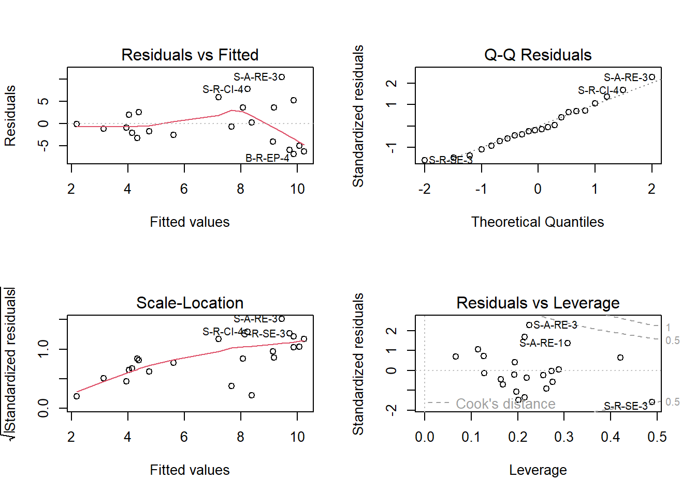
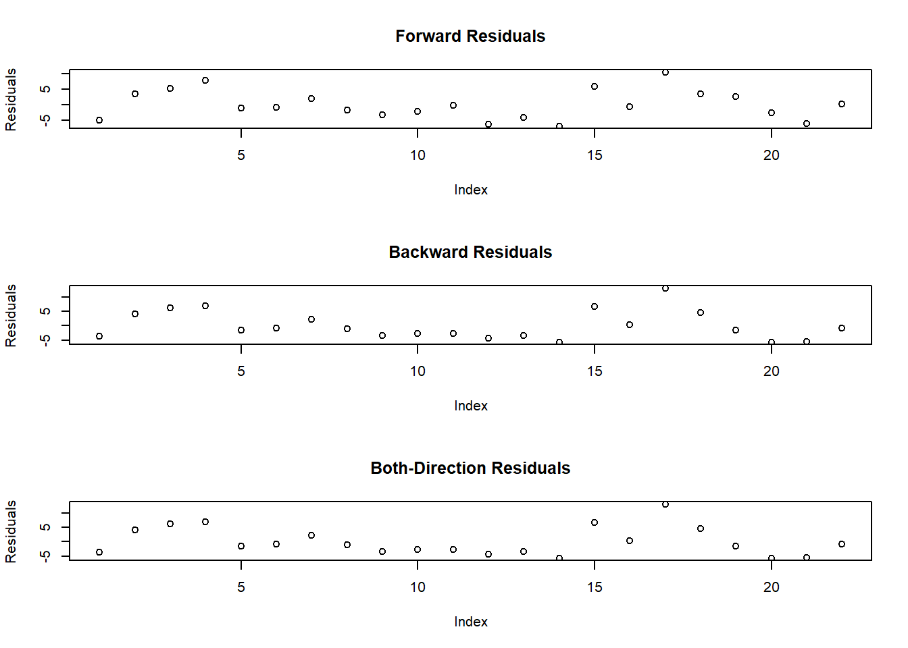
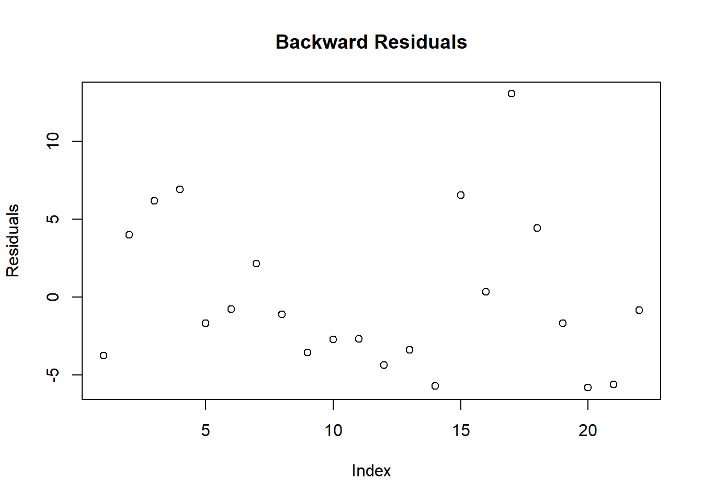
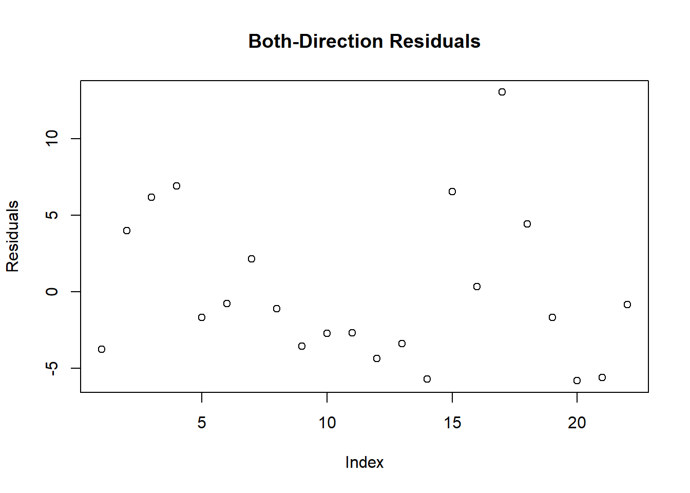

15 Regressão múltipla
RESUMO
A estatística descritiva tem um papel importante a desempenhar na ciência. Quando problemas específicos são tratados na ciência, os dados precisam ser coletados, analisados e apresentados de forma concisa para que outros possam se beneficiar do que foi encontrado.
Apresentação
A regressão múltipla é uma extensão da correlação bivariada e tem como objetivo predizer uma variável dependente a partir de duas ou mais variáveis independentes. Esse método é amplamente utilizado quando as variáveis preditoras apresentam associação entre si e também com a variável resposta. As variáveis independentes podem ser contínuas ou categóricas, embora variáveis categóricas devam ser previamente convertidas em variáveis dummy para serem incluídas no modelo. Em contraste, a variável dependente deve ser medida em uma escala contínua. Se a variável dependente não for contínua, então a análise discriminante é apropriada (COAKES; STEED, 2001).
O resultado da regressão é uma equação que representa a melhor previsão de uma variável dependente a partir de várias variáveis independentes.
Para isso, existem três principais modelos de regressão. Regressão múltipla simultânea ou padrão, regressão múltipla hierárquica e a regressão múltipla stepwise (“passo-a-passo”). Esses modelos diferem em dois aspectos: primeiro, na forma como tratam a variabilidade compartilhada decorrente da correlação entre as variáveis independentes; e, segundo, na ordem de entrada das variáveis independentes na equação.
No modelo padrão ou simultâneo, todas as variáveis independentes entram na equação de regressão ao mesmo tempo, porque se deseja examinar a relação entre todo o conjunto de preditores e a variável dependente. Na regressão múltipla hierárquica, a ordem de entrada das variáveis é definida previamente, pelo pesquisador, com base em conhecimento teórico ou hipóteses biológicas. Já na regressão múltipla stepwise , a inclusão ou remoção das variáveis ocorre automaticamente a partir de critérios estatísticos, buscando selecionar os melhores preditores do modelo, gerados pelo procedimento stepwise. A regressão stepwise pode ainda ser, forward (seleção progressiva), backward (seleção regressiva) ou mixed (uma combinação de ambos), dependendo da ordem na qual as variáveis são incorporadas. Veremos mais sobre isso a serguir.
Na seleção forward, os preditores são adicionados ao modelo um de cada vez. A ordem de entrada e a permanência de cada preditor no modelo são determinadas com base em dois critérios: se o teste F excede um valor crítico preestabelecido e se é atingido um nível crítico de significância.
Na seleção backward, o modelo é inicialmente ajustado com todas as variáveis independentes e, em seguida, aquelas com menor contribuição são removidas gradualmente, com base no fato de seu valor parcial de F ser inferior a um valor crítico. Além disso, deve ser atendido o critério padrão de significância para remoção.
A seleção stepwise combina os procedimentos forward e backward, permitindo que variáveis previamente incluídas no modelo sejam posteriormente removidas, caso deixem de atender aos critérios estatísticos estabelecidos.
A escolha do método depende, em grande parte, dos objetivos do pesquisador, e a aplicação da regressão múltipla exige o atendimento de alguns pressupostos estatísticos (COAKES; STEED, 2001).
15.0.0.1 Pressupostos
Uma série de pressupostos sustenta o uso da regressão:
Razão entre casos e variáveis independentes: O número de casos necessários depende do tipo de modelo de regressão a ser utilizado. Para regressão padrão ou hierárquica, idealmente deve-se ter vinte vezes mais casos do que preditores, enquanto ainda mais casos são necessários para regressão stepwise. O requisito mínimo é ter pelo menos cinco vezes mais casos do que variáveis independentes (COAKES; STEED, 2001).
Outliers: Casos extremos têm impacto considerável na solução de regressão e devem ser excluídos ou modificados para reduzir sua influência. Outliers univariados podem ser detectados durante a triagem de dados, conforme descrito na seção Gráficos de histograma e boxplot. Outliers multivariados podem ser detectados usando métodos estatísticos, como a distância de Mahalanobis, e métodos gráficos, como gráficos de dispersão dos resíduos (isso é abordado na
PARTE VAnálise de outliers baseada no desvio padrão do centróide deste livro). A decisão de remover outliers do conjunto de dados deve ser tomada com cuidado, porque sua exclusão frequentemente resulta na geração de outros casos discrepantes.Multicolinearidade e singularidade: Multicolinearidade refere-se a altas correlações entre as variáveis independentes, enquanto singularidade ocorre quando existem correlações perfeitas entre variáveis independentes. Esses problemas afetam a forma como se interpretam quaisquer relações entre os preditores (VIs) e a variável dependente, e podem ser detectados examinando-se a matriz de correlação, as correlações múltiplas ao quadrado e as tolerâncias. A maioria dos programas computacionais possui valores padrão para multicolinearidade. É importante não admitir-mos variáveis que representem esse tipo de problema.
Normalidade, linearidade, homocedasticidade e independência dos resíduos: Um exame dos gráficos de dispersão dos resíduos permite testar os pressupostos acima. Assume-se que as diferenças entre os escores observados e previstos da variável dependente sejam normalmente distribuídas. Além disso, assume-se que os resíduos tenham uma relação linear com os escores previstos da variável dependente e que a variância dos resíduos seja a mesma para todos os escores previstos. Desvios leves da linearidade não são graves. Desvios moderados a extremos podem levar a uma séria subestimação de uma relação.
O pressuposto 1 relaciona-se ao delineamento da pesquisa. Os pressupostos 2, 3 e 4 são avaliados por meio da análise de regressão.
No contexto da biometria de Cichla ocellaris, a regressão múltipla pode ser utilizada para investigar quais variáveis morfométricas melhor predizem o peso corporal dos indivíduos. Nesse caso, o peso total (PT_g) pode ser utilizado como variável dependente, enquanto variáveis como comprimento total (CT_cm), comprimento padrão (CP_cm) podem atuar como variáveis independentes. Assim, o modelo busca explicar a variação do peso corporal a partir de múltiplos atributos biométricos dos indivíduos analisados.
Com esse tipo de análise, é possível responder questões como:
- Qual a contribuição conjunta das variáveis biométricas para a predição do peso corporal?
- Qual variável apresenta maior poder preditivo?
- Se determinadas hipóteses biológicas previamente propostas são sustentadas pelos dados observados.
15.1 Organização básica
dev.off() #apaga os graficos, se houver algum
rm(list=ls(all=TRUE)) #limpa a memória
cat("\014") #limpa o console 15.1.1 Organizando os dados
library(openxlsx)
univ <- read.xlsx("D:/Elvio/OneDrive/Disciplinas/_EcoNumerica/5.Matrizes/tucuna.xlsx",
rowNames = T, colNames = T,
sheet = "tucuna")
head(univ, 10)
head(univ[, 1:5], 10)## CT_cm PT_g CP_cm Ctubo_cm PC_g p_PT Pest_g Cest_cm gr_est ir_est
## TU001 32.4 468.8 27.2 39.8 458.9 2.111775 3.9 7.7 I 0.8319113
## TU002 33.4 520.0 28.8 14.3 507.4 2.423077 5.9 10.0 I 1.1346154
## TU003 27.3 301.5 23.8 13.0 283.4 6.003317 15.5 10.2 III 5.1409619
## TU004 13.2 28.2 11.0 16.5 27.7 1.773050 0.3 4.3 I 1.0638298
## TU005 14.3 38.9 11.9 15.5 37.7 3.084833 0.8 4.5 III 2.0565553
## TU006 22.7 431.7 20.5 24.2 418.7 3.011350 9.9 6.4 III 2.2932592
## TU007 23.2 544.0 19.2 25.0 520.1 4.393382 6.8 7.5 II 1.2500000
## TU008 13.5 161.6 11.5 17.5 157.0 2.846535 4.1 6.8 II 2.5371287
## TU009 24.6 200.5 20.5 25.7 195.9 2.294264 2.5 7.6 II 1.2468828
## TU010 19.4 86.7 16.0 18.3 84.5 2.537486 0.7 5.1 I 0.8073818
## Pint_g Cint_cm gr_int ir_int Pgon_g Cgon_cm emg ig
## TU001 4.8 38.3 II 1.0238908 1.2 7 IMATURO 0.25597270
## TU002 5.3 13.3 II 1.0192308 1.4 6.5 MADURO 0.26923077
## TU003 2.4 12.0 II 0.7960199 0.2 7.7 EM MATURACAO 0.06633499
## TU004 0.1 16.0 II 0.3546099 0.1 5 IMATURO 0.35460993
## TU005 0.3 15.0 II 0.7712082 0.1 3.2 IMATURO 0.25706941
## TU006 2.7 23.7 II 0.6254343 0.4 7.8 EM MATURACAO 0.09265694
## TU007 3.3 24.5 II 0.6066176 13.8 7.9 MADURO 2.53676471
## TU008 0.4 17.0 I 0.2475248 0.1 2.5 IMATURO 0.06188119
## TU009 2.0 25.3 II 0.9975062 0.1 6.5 EM MATURACAO 0.04987531
## TU010 1.4 17.7 II 1.6147636 0.1 6 IMATURO 0.11534025
## mes periodo estação sexo sexo2
## TU001 ago chuvoso inverno MACHO FEMEA
## TU002 ago chuvoso inverno MACHO FEMEA
## TU003 ago chuvoso inverno MACHO FEMEA
## TU004 ago chuvoso inverno MACHO FEMEA
## TU005 ago chuvoso inverno MACHO FEMEA
## TU006 set chuvoso inverno MACHO FEMEA
## TU007 set chuvoso inverno FEMEA MACHO
## TU008 set chuvoso inverno imaturo imaturo
## TU009 set chuvoso inverno MACHO FEMEA
## TU010 set chuvoso inverno MACHO FEMEA
## CT_cm PT_g CP_cm Ctubo_cm PC_g
## TU001 32.4 468.8 27.2 39.8 458.9
## TU002 33.4 520.0 28.8 14.3 507.4
## TU003 27.3 301.5 23.8 13.0 283.4
## TU004 13.2 28.2 11.0 16.5 27.7
## TU005 14.3 38.9 11.9 15.5 37.7
## TU006 22.7 431.7 20.5 24.2 418.7
## TU007 23.2 544.0 19.2 25.0 520.1
## TU008 13.5 161.6 11.5 17.5 157.0
## TU009 24.6 200.5 20.5 25.7 195.9
## TU010 19.4 86.7 16.0 18.3 84.515.1.1.1 Correlograma e redução de variáveis desnecessárias
# Correlograma e redução de variáveis desnecessárias
library(psych)
colnames(univ)
#png("fig-nome.png")
pairs.panels(univ[,1:6], #colunas de interesse
method = "pearson", # correlation method
scale = FALSE, lm = FALSE,
hist.col = "#00AFBB", pch = 19,
density = TRUE, # show density plots
ellipses = TRUE, # show correlation ellipses
alpha = 0.5)
#dev.off()
cor <- cor(univ[,1:6])
cor
library(corrplot)
#png("fig-nome.png")
corrplot(cor, method = "circle")
#dev.off()
## Impressão em papel
#win.print()
#corrplot(cor, method = "circle")
#dev.off()## [1] "CT_cm" "PT_g" "CP_cm" "Ctubo_cm" "PC_g" "p_PT"
## [7] "Pest_g" "Cest_cm" "gr_est" "ir_est" "Pint_g" "Cint_cm"
## [13] "gr_int" "ir_int" "Pgon_g" "Cgon_cm" "emg" "ig"
## [19] "mes" "periodo" "estação" "sexo" "sexo2"
## CT_cm PT_g CP_cm Ctubo_cm PC_g p_PT
## CT_cm 1.0000000 0.9057485 0.9990120 0.9091518 0.9039903 -0.5189589
## PT_g 0.9057485 1.0000000 0.9039503 0.8093258 0.9999423 -0.3320403
## CP_cm 0.9990120 0.9039503 1.0000000 0.9071124 0.9021382 -0.5159241
## Ctubo_cm 0.9091518 0.8093258 0.9071124 1.0000000 0.8062440 -0.4330032
## PC_g 0.9039903 0.9999423 0.9021382 0.8062440 1.0000000 -0.3321762
## p_PT -0.5189589 -0.3320403 -0.5159241 -0.4330032 -0.3321762 1.0000000

15.1.1.2 Exemplo 2
Um pesquisador deseja determinar o efeito das variáveis ambientais de corpos aquáticos sobre a riqueza de espécies. Para isso, foram amostrados diferentes tipos de ambientes aquáticos e registradas a abundância e densidade de indivíduos, além de vários tipos de variáveis ambientais que refletem a morfologia local, qualidade da água, composição do sedimento e estruturas subaquáticas do habitat marginal. Regressão Múltipla foi utilizada nesse conjunto de dados para responder às seguintes perguntas:
- Qual contribuição as variáveis morfológicas oferecem para a previsão da riqueza de espécies?
- Qual variável morfológica é a melhor preditora da riqueza de espécies?
- Estudos anteriores sugerem que a largura influencia a riqueza de espécies. Essa hipótese é corroborada pelos dados analisados?
15.2 Sobre os dados
ATENÇÃO
Os links para baixar as planilhas necessárias para repetir esse tutorial podem ser encontrados na seção Arquivos disponíveis do Capítulo Bases de dados.
Ou, baixe aqui o arquivo ppbio06com-bentos.xlsx
Também usaremos uma matriz ambiental com seus respectivos agrupamentos.
ATENÇÃO
Os links para baixar as planilhas necessárias para repetir esse tutorial podem ser encontrados na seção Arquivos disponíveis do Capítulo Bases de dados.
Ou, baixe aqui o arquivo ppbio06amb-bentos.xlsx
15.3 Organização básica
dev.off() #apaga os graficos, se houver algum
rm(list=ls(all=TRUE)) #limpa a memória
cat("\014") #limpa o console
library(openxlsx)
densidade <- read.xlsx("D:/Elvio/OneDrive/Disciplinas/_EcoNumerica/5.Matrizes/ppbio06com-bentos.xlsx",
rowNames = T,
colNames = T,
sheet = "densidade")
habitat <- read.xlsx("D:/Elvio/OneDrive/Disciplinas/_EcoNumerica/5.Matrizes/ppbio06amb-bentos.xlsx",
rowNames = T,
colNames = T,
sheet = "ambiente")
grupos <- read.xlsx("D:/Elvio/OneDrive/Disciplinas/_EcoNumerica/5.Matrizes/ppbio06amb-bentos.xlsx",
rowNames = T,
colNames = T,
sheet = "grupos")
densidade[1:5,1:5] #[1:5,1:5] mostra apenas as linhas e colunas de 1 a 5.
# Removendo linhas e colunas zeradas
rownames(densidade)
rowSums(densidade)
colSums(densidade)
matriz <- densidade
# Linhas zeradas
sum <- rowSums(matriz)
sum
zero_sum <- rownames(matriz)[which(rowSums(matriz) == 0)]
zero_sum # nomes das linhas zeradas
m_part_rows <- matriz[(rowSums(matriz) != 0), ] #em != a exclamação inverte o sentido
zero_sum2 <- rownames(m_part_rows)[which(rowSums(m_part_rows) == 0)]
zero_sum2 #nomes das linhas zeradas
sum <- rowSums(m_part_rows)
sum
# Colunas zeradas
sum <- colSums(m_part_rows)
sum
zero_sum <- names(which(colSums(m_part_rows) == 0))
zero_sum #nomes das espécies zeradas
m_part_cols <- m_part_rows[, (colSums(m_part_rows) != 0)] #remove colunas zeradas
zero_sum2 <- names(which(colSums(m_part_cols) == 0))
zero_sum2 #nomes das espécies zeradas
sum <- colSums(m_part_cols)
sum
m_dens <- as.data.frame(m_part_cols)
# Particionando a matriz ambiental
rownames(habitat)
del_rows <- c("B-A-MU-1", "B-R-EP-1")
del_rows
m_hab <- habitat[!(row.names(habitat) %in% c(del_rows)),]
m_hab
# Particionando tabela de grupos
t_grps <- grupos[!(row.names(grupos) %in% del_rows),]
# Salvando as matrizes finais particionadas
write.table(m_dens, "m_dens.csv",
sep = ";", dec = ".", #"\t",
row.names = TRUE,
quote = TRUE,
append = FALSE)
write.table(t_grps, "t_grps.csv",
sep = ";", dec = ".", #"\t",
row.names = TRUE,
quote = TRUE,
append = FALSE)
write.table(m_hab, "m_hab.csv",
sep = ";", dec = ".", #"\t",
row.names = TRUE,
quote = TRUE,
append = FALSE)
t_grps <- read.csv("t_grps.csv",
sep = ";", dec = ".",
row.names = 1,
header = TRUE,
na.strings = NA)
m_dens <- read.csv("m_dens.csv",
sep = ";", dec = ".",
row.names = 1,
header = TRUE,
na.strings = NA)
m_hab <- read.csv("m_hab.csv",
sep = ";", dec = ".",
row.names = 1,
header = TRUE,
na.strings = NA)
# Particionando a matriz de contagem
contagem <- read.xlsx("D:/Elvio/OneDrive/Disciplinas/_EcoNumerica/5.Matrizes/ppbio06com-bentos.xlsx",
rowNames = T,
colNames = T,
sheet = "contagem")
contagem[1:5,1:5] #[1:5,1:5] mostra apenas as linhas e colunas de 1 a 5.
matriz <- contagem
# Linhas zeradas
sum <- rowSums(matriz)
sum
zero_sum <- rownames(matriz)[which(rowSums(matriz) == 0)]
zero_sum # nomes das linhas zeradas
m_part_rows <- matriz[(rowSums(matriz) != 0), ] #em != a exclamação inverte o sentido
zero_sum2 <- rownames(m_part_rows)[which(rowSums(m_part_rows) == 0)]
zero_sum2 #nomes das linhas zeradas
sum <- rowSums(m_part_rows)
sum
# Colunas zeradas
sum <- colSums(m_part_rows)
sum
zero_sum <- names(which(colSums(m_part_rows) == 0))
zero_sum #nomes das espécies zeradas
m_part_cols <- m_part_rows[, (colSums(m_part_rows) != 0)] #remove colunas zeradas
zero_sum2 <- names(which(colSums(m_part_cols) == 0))
zero_sum2 #nomes das espécies zeradas
sum <- colSums(m_part_cols)
sum
m_cont <- as.data.frame(m_part_cols)
# Salvando a matriz final
write.table(m_cont, "m_cont.csv",
sep = ";", dec = ".", #"\t",
row.names = TRUE,
quote = TRUE,
append = FALSE)
m_cont <- read.csv("m_cont.csv",
sep = ";", dec = ".",
row.names = 1,
header = TRUE,
na.strings = NA)## Hydrachnidia Ampularidae Atyidae Baetidae Belastomatidae
## S-R-CI-1 0.00 0.000000 0 0.000000 0
## S-R-CI-2 0.00 0.000000 0 2.083333 0
## S-R-CI-3 93.75 2.083333 0 177.083333 0
## S-R-CI-4 0.00 4.166667 0 8.333333 0
## B-A-SA-1 0.00 0.000000 0 0.000000 0
## [1] "S-R-CI-1" "S-R-CI-2" "S-R-CI-3" "S-R-CI-4" "B-A-SA-1" "B-A-SA-2"
## [7] "B-A-SA-3" "B-A-SA-4" "B-A-MU-1" "B-A-MU-2" "B-A-MU-3" "B-A-MU-4"
## [13] "B-R-EP-1" "B-R-EP-2" "B-R-EP-3" "B-R-EP-4" "S-A-RE-1" "S-A-RE-2"
## [19] "S-A-RE-3" "S-A-RE-4" "S-R-SE-1" "S-R-SE-2" "S-R-SE-3" "S-R-SE-4"
## S-R-CI-1 S-R-CI-2 S-R-CI-3 S-R-CI-4 B-A-SA-1 B-A-SA-2
## 62.500000 3022.916667 9010.416667 2029.166667 10.416667 29.166667
## B-A-SA-3 B-A-SA-4 B-A-MU-1 B-A-MU-2 B-A-MU-3 B-A-MU-4
## 31.250000 83.333333 0.000000 6.250000 8.333333 25.000000
## B-R-EP-1 B-R-EP-2 B-R-EP-3 B-R-EP-4 S-A-RE-1 S-A-RE-2
## 0.000000 2895.833333 927.083333 2791.666667 3345.833333 2252.083333
## S-A-RE-3 S-A-RE-4 S-R-SE-1 S-R-SE-2 S-R-SE-3 S-R-SE-4
## 2829.166667 3629.166667 64.583333 2639.583333 8731.250000 14231.250000
## Hydrachnidia Ampularidae Atyidae Baetidae Belastomatidae
## 93.750000 8.333333 122.916667 233.333333 4.166667
## Caenidae Ceratopogonidae Coenagrionidae Conchostraca Corixidae
## 318.750000 156.250000 37.500000 375.000000 1833.333333
## Curculionidae Chaoboridae Chironomidae_L Chironomidae_P Dytiscidae_L
## 12.500000 4.166667 13839.583333 289.583333 12.500000
## Dytiscidae_A Gerridae Gomphidae Glossosomatidae Hidrophilidae_L
## 70.833333 4.166667 83.333333 12.500000 485.416667
## Hidrophilide_A Hirudinea Leptohyphidae Leptoceridae Libellulidae
## 204.166667 16.666667 72.916667 6.250000 497.916667
## Lymnaeidae Naucoridae Notonectidae Oligochaeta Ostracoda
## 6.250000 27.083333 137.500000 8370.833333 270.833333
## Planorbidae Physidae Sphaeridae Thiaridae Veliidae
## 1493.750000 62.500000 2.083333 29483.333333 6.250000
## S-R-CI-1 S-R-CI-2 S-R-CI-3 S-R-CI-4 B-A-SA-1 B-A-SA-2
## 62.500000 3022.916667 9010.416667 2029.166667 10.416667 29.166667
## B-A-SA-3 B-A-SA-4 B-A-MU-1 B-A-MU-2 B-A-MU-3 B-A-MU-4
## 31.250000 83.333333 0.000000 6.250000 8.333333 25.000000
## B-R-EP-1 B-R-EP-2 B-R-EP-3 B-R-EP-4 S-A-RE-1 S-A-RE-2
## 0.000000 2895.833333 927.083333 2791.666667 3345.833333 2252.083333
## S-A-RE-3 S-A-RE-4 S-R-SE-1 S-R-SE-2 S-R-SE-3 S-R-SE-4
## 2829.166667 3629.166667 64.583333 2639.583333 8731.250000 14231.250000
## [1] "B-A-MU-1" "B-R-EP-1"
## character(0)
## S-R-CI-1 S-R-CI-2 S-R-CI-3 S-R-CI-4 B-A-SA-1 B-A-SA-2
## 62.500000 3022.916667 9010.416667 2029.166667 10.416667 29.166667
## B-A-SA-3 B-A-SA-4 B-A-MU-2 B-A-MU-3 B-A-MU-4 B-R-EP-2
## 31.250000 83.333333 6.250000 8.333333 25.000000 2895.833333
## B-R-EP-3 B-R-EP-4 S-A-RE-1 S-A-RE-2 S-A-RE-3 S-A-RE-4
## 927.083333 2791.666667 3345.833333 2252.083333 2829.166667 3629.166667
## S-R-SE-1 S-R-SE-2 S-R-SE-3 S-R-SE-4
## 64.583333 2639.583333 8731.250000 14231.250000
## Hydrachnidia Ampularidae Atyidae Baetidae Belastomatidae
## 93.750000 8.333333 122.916667 233.333333 4.166667
## Caenidae Ceratopogonidae Coenagrionidae Conchostraca Corixidae
## 318.750000 156.250000 37.500000 375.000000 1833.333333
## Curculionidae Chaoboridae Chironomidae_L Chironomidae_P Dytiscidae_L
## 12.500000 4.166667 13839.583333 289.583333 12.500000
## Dytiscidae_A Gerridae Gomphidae Glossosomatidae Hidrophilidae_L
## 70.833333 4.166667 83.333333 12.500000 485.416667
## Hidrophilide_A Hirudinea Leptohyphidae Leptoceridae Libellulidae
## 204.166667 16.666667 72.916667 6.250000 497.916667
## Lymnaeidae Naucoridae Notonectidae Oligochaeta Ostracoda
## 6.250000 27.083333 137.500000 8370.833333 270.833333
## Planorbidae Physidae Sphaeridae Thiaridae Veliidae
## 1493.750000 62.500000 2.083333 29483.333333 6.250000
## character(0)
## character(0)
## Hydrachnidia Ampularidae Atyidae Baetidae Belastomatidae
## 93.750000 8.333333 122.916667 233.333333 4.166667
## Caenidae Ceratopogonidae Coenagrionidae Conchostraca Corixidae
## 318.750000 156.250000 37.500000 375.000000 1833.333333
## Curculionidae Chaoboridae Chironomidae_L Chironomidae_P Dytiscidae_L
## 12.500000 4.166667 13839.583333 289.583333 12.500000
## Dytiscidae_A Gerridae Gomphidae Glossosomatidae Hidrophilidae_L
## 70.833333 4.166667 83.333333 12.500000 485.416667
## Hidrophilide_A Hirudinea Leptohyphidae Leptoceridae Libellulidae
## 204.166667 16.666667 72.916667 6.250000 497.916667
## Lymnaeidae Naucoridae Notonectidae Oligochaeta Ostracoda
## 6.250000 27.083333 137.500000 8370.833333 270.833333
## Planorbidae Physidae Sphaeridae Thiaridae Veliidae
## 1493.750000 62.500000 2.083333 29483.333333 6.250000
## [1] "S-R-CI-1" "S-R-CI-2" "S-R-CI-3" "S-R-CI-4" "B-A-SA-1" "B-A-SA-2"
## [7] "B-A-SA-3" "B-A-SA-4" "B-A-MU-1" "B-A-MU-2" "B-A-MU-3" "B-A-MU-4"
## [13] "B-R-EP-1" "B-R-EP-2" "B-R-EP-3" "B-R-EP-4" "S-A-RE-1" "S-A-RE-2"
## [19] "S-A-RE-3" "S-A-RE-4" "S-R-SE-1" "S-R-SE-2" "S-R-SE-3" "S-R-SE-4"
## [1] "B-A-MU-1" "B-R-EP-1"
## g.river_length g.altitude m.depth_mar m.depth_max m.slope m.width
## S-R-CI-1 83.0500 169 22.666667 60 60 17.24
## S-R-CI-2 83.0500 169 32.666667 68 60 18.47
## S-R-CI-3 83.0500 169 32.666667 79 60 15.10
## S-R-CI-4 83.0500 169 45.333333 64 60 10.70
## B-A-SA-1 212.6667 713 8.166667 60 30 330.00
## B-A-SA-2 212.6667 713 7.000000 69 30 321.00
## B-A-SA-3 212.6667 713 6.833333 68 30 314.20
## B-A-SA-4 212.6667 713 4.666667 63 30 289.50
## B-A-MU-2 214.0200 725 22.000000 115 30 247.63
## B-A-MU-3 214.0200 725 25.666667 117 30 234.53
## B-A-MU-4 214.0200 725 41.333333 112 30 239.00
## B-R-EP-2 196.8333 402 49.333333 110 90 29.60
## B-R-EP-3 196.8333 402 50.000000 80 90 27.30
## B-R-EP-4 196.8333 402 52.833333 95 90 20.00
## S-A-RE-1 110.2000 270 54.666667 154 60 102.00
## S-A-RE-2 110.2000 270 37.666667 118 60 100.00
## S-A-RE-3 110.2000 270 22.333333 109 60 88.00
## S-A-RE-4 110.2000 270 30.333333 87 60 72.20
## S-R-SE-1 163.2000 226 81.333333 106 30 19.64
## S-R-SE-2 163.2000 226 67.000000 105 30 16.10
## S-R-SE-3 163.2000 226 32.333333 110 30 6.20
## S-R-SE-4 163.2000 226 32.333333 74 30 5.40
## q.w_vel q.temp q.do q.turb s.mud s.sand s.smlgrav
## S-R-CI-1 0.1591512 35.20000 6.863333 26.00000 16.6666667 70.000000 5.000000
## S-R-CI-2 0.0000000 29.00000 3.015000 33.00000 0.6666667 87.666667 3.333333
## S-R-CI-3 0.0000000 29.66667 5.000000 50.33333 48.7500000 22.500000 10.000000
## S-R-CI-4 0.0000000 27.60000 4.900000 60.00000 5.0000000 60.000000 0.000000
## B-A-SA-1 0.0000000 29.23333 5.136667 25.66667 96.6666667 3.333333 0.000000
## B-A-SA-2 0.0000000 29.00000 1.850000 55.00000 98.0000000 2.000000 0.000000
## B-A-SA-3 0.0000000 24.00000 8.800000 51.66667 87.7777778 6.666667 3.333333
## B-A-SA-4 0.0000000 24.70000 8.750000 36.00000 95.1666667 3.416667 1.333333
## B-A-MU-2 0.0000000 29.00000 1.815000 43.00000 20.6000000 77.000000 0.000000
## B-A-MU-3 0.0000000 26.00000 5.700000 63.00000 65.0000000 35.000000 0.000000
## B-A-MU-4 0.0000000 25.95000 7.300000 89.00000 91.7777778 3.222222 0.000000
## B-R-EP-2 0.0000000 29.00000 5.635000 50.00000 39.0000000 56.000000 3.000000
## B-R-EP-3 0.0000000 29.00000 5.000000 32.33333 33.6666667 63.000000 3.333333
## B-R-EP-4 0.0000000 28.85000 5.100000 30.00000 48.8750000 47.875000 1.875000
## S-A-RE-1 0.1000000 34.00000 4.820000 61.00000 81.6666667 8.333333 1.666667
## S-A-RE-2 0.0000000 29.00000 5.000000 90.00000 5.0000000 95.000000 0.000000
## S-A-RE-3 0.0000000 34.00000 9.000000 51.66667 46.6666667 40.000000 6.666667
## S-A-RE-4 0.0000000 29.53333 9.433333 67.00000 59.1428571 38.714286 2.142857
## S-R-SE-1 0.1666667 32.90000 6.510000 46.00000 65.0000000 30.000000 0.000000
## S-R-SE-2 0.1250000 32.00000 5.375000 44.00000 40.0000000 40.000000 0.000000
## S-R-SE-3 0.0000000 28.26667 6.000000 17.33333 65.5555556 23.111111 0.000000
## S-R-SE-4 0.0000000 32.60000 6.000000 16.00000 95.0000000 1.833333 0.000000
## s.lrggrav s.cobbles s.rocks s.bedrock h.macroph h.grass
## S-R-CI-1 5.00000000 3.3333333 0.000000 0.000000 0.000000 23.3333333
## S-R-CI-2 3.33333333 5.0000000 0.000000 0.000000 0.000000 0.0000000
## S-R-CI-3 10.00000000 8.7500000 0.000000 0.000000 0.000000 0.0000000
## S-R-CI-4 0.00000000 25.0000000 10.000000 0.000000 0.000000 0.0000000
## B-A-SA-1 0.00000000 0.0000000 0.000000 0.000000 46.666667 0.0000000
## B-A-SA-2 0.00000000 0.0000000 0.000000 0.000000 2.600000 7.5000000
## B-A-SA-3 2.22222222 0.0000000 0.000000 0.000000 0.000000 13.3333333
## B-A-SA-4 0.08333333 0.0000000 0.000000 0.000000 2.083333 0.0000000
## B-A-MU-2 0.00000000 2.4000000 0.000000 0.000000 0.000000 54.0000000
## B-A-MU-3 0.00000000 0.0000000 0.000000 0.000000 0.000000 28.3333333
## B-A-MU-4 0.00000000 0.0000000 5.000000 0.000000 0.000000 5.5555556
## B-R-EP-2 0.00000000 1.0000000 1.000000 0.000000 0.000000 2.0000000
## B-R-EP-3 0.00000000 0.0000000 0.000000 0.000000 0.000000 0.0000000
## B-R-EP-4 0.00000000 0.1250000 1.250000 0.000000 0.000000 0.0000000
## S-A-RE-1 0.00000000 0.0000000 0.000000 8.333333 5.833333 0.0000000
## S-A-RE-2 0.00000000 0.0000000 0.000000 0.000000 54.833333 0.3333333
## S-A-RE-3 6.66666667 0.0000000 0.000000 0.000000 44.629630 8.1111111
## S-A-RE-4 0.00000000 0.0000000 0.000000 0.000000 37.309524 0.0000000
## S-R-SE-1 0.00000000 1.6666667 0.000000 3.333333 8.333333 20.0000000
## S-R-SE-2 0.00000000 20.0000000 0.000000 0.000000 0.000000 20.0000000
## S-R-SE-3 0.00000000 3.0000000 8.333333 0.000000 0.000000 0.1111111
## S-R-SE-4 0.00000000 0.3333333 2.833333 0.000000 0.000000 4.1666667
## h.subveg h.overhveg h.litter h.filalgae h.attalgae h.roots
## S-R-CI-1 3.000000 26.666667 2.3333333 3.3333333 0.6666667 3.333333
## S-R-CI-2 0.000000 33.333333 1.0000000 0.0000000 0.0000000 5.000000
## S-R-CI-3 0.000000 0.000000 1.5000000 6.2500000 0.5000000 1.000000
## S-R-CI-4 0.000000 8.333333 1.0000000 25.0000000 50.0000000 0.000000
## B-A-SA-1 3.333333 3.333333 0.0000000 0.0000000 0.0000000 0.000000
## B-A-SA-2 26.000000 0.400000 0.0000000 0.0000000 1.0000000 0.000000
## B-A-SA-3 0.000000 0.000000 0.0000000 25.0000000 0.0000000 0.000000
## B-A-SA-4 0.000000 0.000000 0.0000000 0.8333333 42.5000000 0.000000
## B-A-MU-2 36.600000 0.000000 5.0000000 0.0000000 0.0000000 0.000000
## B-A-MU-3 8.333333 0.000000 1.0000000 0.0000000 0.3333333 0.000000
## B-A-MU-4 0.000000 0.000000 0.4444444 0.0000000 30.0000000 0.000000
## B-R-EP-2 0.000000 0.000000 0.4000000 0.0000000 0.4000000 0.000000
## B-R-EP-3 0.000000 0.000000 0.3333333 0.0000000 0.0000000 0.000000
## B-R-EP-4 0.000000 0.000000 0.5000000 0.0000000 0.0000000 0.000000
## S-A-RE-1 16.666667 33.333333 3.6666667 25.0000000 3.3333333 0.000000
## S-A-RE-2 0.000000 8.333333 1.0000000 33.3333330 0.0000000 0.000000
## S-A-RE-3 0.000000 0.000000 0.6666667 9.0000000 0.0000000 0.000000
## S-A-RE-4 0.000000 0.000000 0.5714286 0.0000000 0.0000000 0.000000
## S-R-SE-1 10.000000 0.000000 0.6666667 0.0000000 12.0000000 0.000000
## S-R-SE-2 0.000000 0.000000 0.0000000 0.0000000 1.0000000 0.000000
## S-R-SE-3 0.000000 0.000000 0.0000000 0.0000000 0.0000000 0.000000
## S-R-SE-4 0.000000 0.000000 0.8333333 0.0000000 7.5000000 0.000000
## h.smldeb h.lrgdeb
## S-R-CI-1 2.0000000 1.6666667
## S-R-CI-2 7.0000000 3.3333333
## S-R-CI-3 3.0000000 0.6666667
## S-R-CI-4 1.0000000 0.0000000
## B-A-SA-1 0.0000000 0.0000000
## B-A-SA-2 0.0000000 0.0000000
## B-A-SA-3 0.0000000 0.0000000
## B-A-SA-4 3.7500000 0.0000000
## B-A-MU-2 10.0000000 0.0000000
## B-A-MU-3 5.0000000 6.6666667
## B-A-MU-4 7.2222222 3.2222222
## B-R-EP-2 0.4000000 0.0000000
## B-R-EP-3 0.4444444 0.0000000
## B-R-EP-4 2.5000000 0.0000000
## S-A-RE-1 10.0000000 0.0000000
## S-A-RE-2 5.3333333 8.3333333
## S-A-RE-3 1.6666667 0.0000000
## S-A-RE-4 3.2857143 0.0000000
## S-R-SE-1 1.6666667 1.6666667
## S-R-SE-2 0.0000000 0.0000000
## S-R-SE-3 2.2222222 0.0000000
## S-R-SE-4 5.0000000 0.0000000
## Hydrachnidia Ampularidae Atyidae Baetidae Belastomatidae
## S-R-CI-1 0 0 0 0 0
## S-R-CI-2 0 0 0 1 0
## S-R-CI-3 45 1 0 85 0
## S-R-CI-4 0 2 0 4 0
## B-A-SA-1 0 0 0 0 0
## S-R-CI-1 S-R-CI-2 S-R-CI-3 S-R-CI-4 B-A-SA-1 B-A-SA-2 B-A-SA-3 B-A-SA-4
## 30 1451 4325 974 5 14 15 40
## B-A-MU-1 B-A-MU-2 B-A-MU-3 B-A-MU-4 B-R-EP-1 B-R-EP-2 B-R-EP-3 B-R-EP-4
## 0 3 4 12 0 1390 445 1340
## S-A-RE-1 S-A-RE-2 S-A-RE-3 S-A-RE-4 S-R-SE-1 S-R-SE-2 S-R-SE-3 S-R-SE-4
## 1606 1081 1358 1742 31 1267 4191 6831
## [1] "B-A-MU-1" "B-R-EP-1"
## character(0)
## S-R-CI-1 S-R-CI-2 S-R-CI-3 S-R-CI-4 B-A-SA-1 B-A-SA-2 B-A-SA-3 B-A-SA-4
## 30 1451 4325 974 5 14 15 40
## B-A-MU-2 B-A-MU-3 B-A-MU-4 B-R-EP-2 B-R-EP-3 B-R-EP-4 S-A-RE-1 S-A-RE-2
## 3 4 12 1390 445 1340 1606 1081
## S-A-RE-3 S-A-RE-4 S-R-SE-1 S-R-SE-2 S-R-SE-3 S-R-SE-4
## 1358 1742 31 1267 4191 6831
## Hydrachnidia Ampularidae Atyidae Baetidae Belastomatidae
## 45 4 59 112 2
## Caenidae Ceratopogonidae Coenagrionidae Conchostraca Corixidae
## 153 75 18 180 880
## Curculionidae Chaoboridae Chironomidae_L Chironomidae_P Dytiscidae_L
## 6 2 6643 139 6
## Dytiscidae_A Gerridae Gomphidae Glossosomatidae Hidrophilidae_L
## 34 2 40 6 233
## Hidrophilide_A Hirudinea Leptohyphidae Leptoceridae Libellulidae
## 98 8 35 3 239
## Lymnaeidae Naucoridae Notonectidae Oligochaeta Ostracoda
## 3 13 66 4018 130
## Planorbidae Physidae Sphaeridae Thiaridae Veliidae
## 717 30 1 14152 3
## character(0)
## character(0)
## Hydrachnidia Ampularidae Atyidae Baetidae Belastomatidae
## 45 4 59 112 2
## Caenidae Ceratopogonidae Coenagrionidae Conchostraca Corixidae
## 153 75 18 180 880
## Curculionidae Chaoboridae Chironomidae_L Chironomidae_P Dytiscidae_L
## 6 2 6643 139 6
## Dytiscidae_A Gerridae Gomphidae Glossosomatidae Hidrophilidae_L
## 34 2 40 6 233
## Hidrophilide_A Hirudinea Leptohyphidae Leptoceridae Libellulidae
## 98 8 35 3 239
## Lymnaeidae Naucoridae Notonectidae Oligochaeta Ostracoda
## 3 13 66 4018 130
## Planorbidae Physidae Sphaeridae Thiaridae Veliidae
## 717 30 1 14152 315.3.0.1 Correlograma e redução de variáveis desnecessárias
dev.off()
rm(list=ls(all=TRUE))
cat("\014")
t_grps <- read.csv("t_grps.csv",
sep = ";", dec = ".",
row.names = 1,
header = TRUE,
na.strings = NA)
m_hab <- read.csv("m_hab.csv",
sep = ";", dec = ".",
row.names = 1,
header = TRUE,
na.strings = NA)
# Correlograma e redução de variáveis desnecessárias
library(psych)
colnames(m_hab)
#png("fig-hab_pairs.png")
pairs.panels(m_hab[,3:6], #colunas de interesse
method = "pearson", # correlation method
scale = FALSE, lm = FALSE,
hist.col = "#00AFBB", pch = 19,
density = TRUE, # show density plots
ellipses = TRUE, # show correlation ellipses
alpha = 0.5)
#dev.off()
cor <- cor(m_hab)
cor
library(corrplot)
#png("fig-hab_corrplot.png")
corrplot(cor, method = "circle")
#dev.off()
## Impressão em papel
#win.print()
#corrplot(cor, method = "circle")
#dev.off()
# Deletando colineares
#sink(file = "colineares.txt", append = F, split = T)
colnames(m_hab)
del_cols <- c() #"g.river_length","g.altitude" #NÃO DELETEI VARIÁVEIS
m_hab_part <- m_hab[, !(colnames(m_hab) %in% del_cols)]
# Somando redundantes
m_hab_part$s.gravel <- m_hab_part$s.smlgrav + m_hab_part$s.lrggrav + m_hab_part$s.cobbles
m_hab_part <- m_hab_part[, !(colnames(m_hab_part)
%in% c("s.smlgrav", "s.lrggrav", "s.cobbles"))]
m_hab_part$s.rocks <- m_hab_part$s.rocks + m_hab_part$s.bedrock
m_hab_part <- m_hab_part[, !(colnames(m_hab_part)
%in% c("s.bedrock"))] #rocks novo substitui o antigo
m_hab_part$h.algae <- m_hab_part$h.filalgae + m_hab_part$h.attalgae
m_hab_part <- m_hab_part[, !(colnames(m_hab_part)
%in% c("h.filalgae", "h.attalgae"))]
m_hab_part$h.debris <- m_hab_part$h.smldeb + m_hab_part$h.lrgdeb
m_hab_part <- m_hab_part[, !(colnames(m_hab_part)
%in% c("h.smldeb", "h.lrgdeb"))]
colnames(m_hab_part)
m_hab_part
#sink()
write.table(m_hab_part, "m_hab_part.csv",
sep = ";", dec = ".", #"\t",
row.names = TRUE,
quote = TRUE,
append = FALSE)
m_hab_part <- read.csv("m_hab_part.csv",
sep = ";", dec = ".",
row.names = 1,
header = TRUE,
na.strings = NA)## null device
## 1
## [1] "g.river_length" "g.altitude" "m.depth_mar" "m.depth_max"
## [5] "m.slope" "m.width" "q.w_vel" "q.temp"
## [9] "q.do" "q.turb" "s.mud" "s.sand"
## [13] "s.smlgrav" "s.lrggrav" "s.cobbles" "s.rocks"
## [17] "s.bedrock" "h.macroph" "h.grass" "h.subveg"
## [21] "h.overhveg" "h.litter" "h.filalgae" "h.attalgae"
## [25] "h.roots" "h.smldeb" "h.lrgdeb"
## g.river_length g.altitude m.depth_mar m.depth_max
## g.river_length 1.000000000 0.84502567 -0.2107788227 0.03193375
## g.altitude 0.845025674 1.00000000 -0.5456269822 -0.05715772
## m.depth_mar -0.210778823 -0.54562698 1.0000000000 0.48741161
## m.depth_max 0.031933747 -0.05715772 0.4874116097 1.00000000
## m.slope -0.349208370 -0.42489758 0.3283867843 0.05612196
## m.width 0.641988529 0.92424799 -0.6825592240 -0.12448305
## q.w_vel -0.262001078 -0.38295700 0.5171356166 0.17255835
## q.temp -0.525665151 -0.63928720 0.3911634740 0.21637312
## q.do -0.051659274 -0.04102810 -0.0991121996 -0.07100992
## q.turb -0.091714999 0.16898017 0.1101861220 0.43212925
## s.mud 0.572275653 0.53376284 -0.3050313798 -0.02986246
## s.sand -0.419694387 -0.39540877 0.2504305845 0.07714330
## s.smlgrav -0.471237455 -0.33801390 -0.1291605642 -0.18707938
## s.lrggrav -0.544226442 -0.34645497 -0.2042006110 -0.21830987
## s.cobbles -0.403532433 -0.42286274 0.3291265735 -0.17913390
## s.rocks -0.117779725 -0.20066951 0.1319413256 -0.03858935
## s.bedrock -0.192613303 -0.18845652 0.4127970495 0.56482143
## h.macroph -0.215456970 -0.05481455 -0.1836470655 0.09117336
## h.grass 0.265200241 0.30832251 -0.0409219509 0.20663711
## h.subveg 0.279722831 0.39857061 -0.1392387004 0.27630152
## h.overhveg -0.590722577 -0.38967693 0.0687330694 0.04945054
## h.litter -0.242878589 -0.06083615 0.0507371439 0.39847691
## h.filalgae -0.392485116 -0.17902428 0.0005987805 0.18844607
## h.attalgae -0.001186444 0.10038855 0.0148526066 -0.23527738
## h.roots -0.516543690 -0.36183451 -0.0963721795 -0.35893734
## h.smldeb -0.124355809 0.06081352 0.0325551250 0.51395706
## h.lrgdeb -0.117830284 0.03802733 0.0419116237 0.26995051
## m.slope m.width q.w_vel q.temp q.do
## g.river_length -0.349208370 0.6419885285 -0.26200108 -0.52566515 -0.0516592738
## g.altitude -0.424897575 0.9242479855 -0.38295700 -0.63928720 -0.0410280998
## m.depth_mar 0.328386784 -0.6825592240 0.51713562 0.39116347 -0.0991121996
## m.depth_max 0.056121960 -0.1244830484 0.17255835 0.21637312 -0.0710099161
## m.slope 1.000000000 -0.5498770747 -0.10766070 0.19871727 -0.0419308349
## m.width -0.549877075 1.0000000000 -0.31411254 -0.54204077 0.0008131425
## q.w_vel -0.107660702 -0.3141125390 1.00000000 0.64759095 0.0629064699
## q.temp 0.198717266 -0.5420407696 0.64759095 1.00000000 -0.0722772054
## q.do -0.041930835 0.0008131425 0.06290647 -0.07227721 1.0000000000
## q.turb 0.010259341 0.2383863495 -0.11099701 -0.24210974 0.1100032765
## s.mud -0.528125673 0.5605422773 -0.09358538 -0.20493421 0.3008137410
## s.sand 0.526002627 -0.4515653205 0.04563133 0.16012915 -0.3159294821
## s.smlgrav 0.465564864 -0.2836142916 -0.02643266 0.23060553 0.2292491864
## s.lrggrav 0.185917468 -0.2204634853 0.03572644 0.27712369 0.1463795646
## s.cobbles -0.005901226 -0.3824094214 0.19824905 0.05603254 -0.1890471593
## s.rocks -0.082932175 -0.2519993118 -0.21518824 -0.22008642 0.0037875243
## s.bedrock 0.031654006 -0.0873140063 0.49907808 0.41780461 -0.0673382190
## h.macroph 0.050444099 0.1399878974 -0.14691717 0.18665422 0.2629680490
## h.grass -0.403122259 0.2434340256 0.30883851 0.09532319 -0.2353366428
## h.subveg -0.312667133 0.4184204319 0.10626426 0.11033997 -0.6046348220
## h.overhveg 0.226153390 -0.2288480414 0.37153753 0.39196980 -0.2374637651
## h.litter 0.046848349 -0.0329222552 0.22271660 0.34840703 -0.3956033776
## h.filalgae 0.127026094 0.0195632889 -0.01352383 -0.04474398 0.0751694004
## h.attalgae -0.179393906 0.1059553668 -0.06926506 -0.35207241 0.2105548893
## h.roots 0.176998187 -0.2800912329 0.20229610 0.21512444 -0.2009824555
## h.smldeb -0.116260323 0.0704089450 -0.05336000 0.04276197 -0.2490107269
## h.lrgdeb -0.064284838 0.0620580191 -0.03594483 -0.17183100 -0.0868542185
## q.turb s.mud s.sand s.smlgrav s.lrggrav
## g.river_length -0.09171500 0.57227565 -0.419694387 -0.471237455 -0.54422644
## g.altitude 0.16898017 0.53376284 -0.395408774 -0.338013905 -0.34645497
## m.depth_mar 0.11018612 -0.30503138 0.250430585 -0.129160564 -0.20420061
## m.depth_max 0.43212925 -0.02986246 0.077143302 -0.187079380 -0.21830987
## m.slope 0.01025934 -0.52812567 0.526002627 0.465564864 0.18591747
## m.width 0.23838635 0.56054228 -0.451565321 -0.283614292 -0.22046349
## q.w_vel -0.11099701 -0.09358538 0.045631331 -0.026432657 0.03572644
## q.temp -0.24210974 -0.20493421 0.160129148 0.230605533 0.27712369
## q.do 0.11000328 0.30081374 -0.315929482 0.229249186 0.14637956
## q.turb 1.00000000 -0.07223620 0.083599381 -0.090296375 -0.07355212
## s.mud -0.07223620 1.00000000 -0.957783005 -0.222195445 -0.22432912
## s.sand 0.08359938 -0.95778300 1.000000000 0.111089985 0.08256158
## s.smlgrav -0.09029638 -0.22219545 0.111089985 1.000000000 0.91807630
## s.lrggrav -0.07355212 -0.22432912 0.082561585 0.918076304 1.00000000
## s.cobbles 0.01134598 -0.44887064 0.222657542 -0.026424565 0.08842146
## s.rocks -0.01558541 -0.06910979 -0.069654875 -0.309941518 -0.22077847
## s.bedrock 0.14116818 0.20182097 -0.224546542 -0.078999373 -0.13636908
## h.macroph 0.31158993 -0.04413777 0.126276177 0.006717696 0.04584885
## h.grass -0.01509716 -0.16537718 0.222442150 -0.177811657 -0.04127532
## h.subveg 0.06506041 0.08033288 -0.004435688 -0.286378841 -0.20744404
## h.overhveg -0.03986454 -0.35117567 0.318668751 0.140256840 0.16791271
## h.litter 0.06881438 -0.32562795 0.327771847 0.078055730 0.12016548
## h.filalgae 0.49077319 -0.22342824 0.158521843 0.039501763 0.06036785
## h.attalgae 0.20060451 0.08590942 -0.194244940 -0.263503810 -0.21204080
## h.roots -0.26305709 -0.47340712 0.446429062 0.369358654 0.44783328
## h.smldeb 0.26451875 -0.08555157 0.144514486 -0.145032992 -0.07961314
## h.lrgdeb 0.53297687 -0.29308976 0.392806733 -0.175030819 -0.04309051
## s.cobbles s.rocks s.bedrock h.macroph h.grass
## g.river_length -0.403532433 -0.117779725 -0.19261330 -0.215456970 0.265200241
## g.altitude -0.422862740 -0.200669512 -0.18845652 -0.054814547 0.308322511
## m.depth_mar 0.329126574 0.131941326 0.41279705 -0.183647065 -0.040921951
## m.depth_max -0.179133903 -0.038589348 0.56482143 0.091173356 0.206637114
## m.slope -0.005901226 -0.082932175 0.03165401 0.050444099 -0.403122259
## m.width -0.382409421 -0.251999312 -0.08731401 0.139987897 0.243434026
## q.w_vel 0.198249045 -0.215188244 0.49907808 -0.146917169 0.308838515
## q.temp 0.056032544 -0.220086417 0.41780461 0.186654221 0.095323192
## q.do -0.189047159 0.003787524 -0.06733822 0.262968049 -0.235336643
## q.turb 0.011345983 -0.015585412 0.14116818 0.311589934 -0.015097158
## s.mud -0.448870644 -0.069109791 0.20182097 -0.044137771 -0.165377185
## s.sand 0.222657542 -0.069654875 -0.22454654 0.126276177 0.222442150
## s.smlgrav -0.026424565 -0.309941518 -0.07899937 0.006717696 -0.177811657
## s.lrggrav 0.088421459 -0.220778474 -0.13636908 0.045848851 -0.041275322
## s.cobbles 1.000000000 0.469913591 -0.12127157 -0.252264472 0.023835319
## s.rocks 0.469913591 1.000000000 -0.13468574 -0.243815262 -0.247534694
## s.bedrock -0.121271567 -0.134685736 1.00000000 -0.043359102 -0.060677870
## h.macroph -0.252264472 -0.243815262 -0.04335910 1.000000000 -0.225166424
## h.grass 0.023835319 -0.247534694 -0.06067787 -0.225166424 1.000000000
## h.subveg -0.160976449 -0.231842136 0.30426497 -0.149722575 0.649953984
## h.overhveg 0.064906116 -0.098085706 0.50479206 -0.057627452 -0.109199604
## h.litter -0.013581580 -0.153337520 0.43853508 -0.125555623 0.566470585
## h.filalgae 0.188914571 0.134383965 0.33443584 0.298616900 -0.195372923
## h.attalgae 0.405309857 0.555931124 -0.01984227 -0.211808706 -0.188804421
## h.roots 0.084905231 -0.161381949 -0.09968140 -0.180448561 -0.004101108
## h.smldeb -0.231674975 -0.054180714 0.41463548 -0.074651931 0.262978643
## h.lrgdeb -0.158839149 -0.123236069 -0.08773874 0.270168938 0.099117063
## h.subveg h.overhveg h.litter h.filalgae h.attalgae
## g.river_length 0.279722831 -0.59072258 -0.24287859 -0.3924851158 -0.001186444
## g.altitude 0.398570607 -0.38967693 -0.06083615 -0.1790242790 0.100388552
## m.depth_mar -0.139238700 0.06873307 0.05073714 0.0005987805 0.014852607
## m.depth_max 0.276301517 0.04945054 0.39847691 0.1884460741 -0.235277380
## m.slope -0.312667133 0.22615339 0.04684835 0.1270260944 -0.179393906
## m.width 0.418420432 -0.22884804 -0.03292226 0.0195632889 0.105955367
## q.w_vel 0.106264262 0.37153753 0.22271660 -0.0135238333 -0.069265056
## q.temp 0.110339966 0.39196980 0.34840703 -0.0447439758 -0.352072407
## q.do -0.604634822 -0.23746377 -0.39560338 0.0751694004 0.210554889
## q.turb 0.065060415 -0.03986454 0.06881438 0.4907731880 0.200604509
## s.mud 0.080332879 -0.35117567 -0.32562795 -0.2234282427 0.085909418
## s.sand -0.004435688 0.31866875 0.32777185 0.1585218432 -0.194244940
## s.smlgrav -0.286378841 0.14025684 0.07805573 0.0395017635 -0.263503810
## s.lrggrav -0.207444039 0.16791271 0.12016548 0.0603678501 -0.212040802
## s.cobbles -0.160976449 0.06490612 -0.01358158 0.1889145712 0.405309857
## s.rocks -0.231842136 -0.09808571 -0.15333752 0.1343839650 0.555931124
## s.bedrock 0.304264973 0.50479206 0.43853508 0.3344358402 -0.019842268
## h.macroph -0.149722575 -0.05762745 -0.12555562 0.2986168997 -0.211808706
## h.grass 0.649953984 -0.10919960 0.56647059 -0.1953729233 -0.188804421
## h.subveg 1.000000000 0.05371661 0.65370466 -0.0812920466 -0.168289149
## h.overhveg 0.053716610 1.00000000 0.44095646 0.3071336586 -0.067998523
## h.litter 0.653704655 0.44095646 1.00000000 0.1849508655 -0.129422759
## h.filalgae -0.081292047 0.30713366 0.18495087 1.0000000000 0.156814606
## h.attalgae -0.168289149 -0.06799852 -0.12942276 0.1568146063 1.000000000
## h.roots -0.132672304 0.72073747 0.16368669 -0.1312445975 -0.158491818
## h.smldeb 0.407462990 0.42571768 0.72455356 0.1168191385 0.038651614
## h.lrgdeb -0.092240200 0.17593257 0.02424289 0.2700099670 -0.075556606
## h.roots h.smldeb h.lrgdeb
## g.river_length -0.516543690 -0.12435581 -0.11783028
## g.altitude -0.361834509 0.06081352 0.03802733
## m.depth_mar -0.096372180 0.03255513 0.04191162
## m.depth_max -0.358937337 0.51395706 0.26995051
## m.slope 0.176998187 -0.11626032 -0.06428484
## m.width -0.280091233 0.07040894 0.06205802
## q.w_vel 0.202296097 -0.05336000 -0.03594483
## q.temp 0.215124441 0.04276197 -0.17183100
## q.do -0.200982456 -0.24901073 -0.08685422
## q.turb -0.263057089 0.26451875 0.53297687
## s.mud -0.473407121 -0.08555157 -0.29308976
## s.sand 0.446429062 0.14451449 0.39280673
## s.smlgrav 0.369358654 -0.14503299 -0.17503082
## s.lrggrav 0.447833281 -0.07961314 -0.04309051
## s.cobbles 0.084905231 -0.23167498 -0.15883915
## s.rocks -0.161381949 -0.05418071 -0.12323607
## s.bedrock -0.099681402 0.41463548 -0.08773874
## h.macroph -0.180448561 -0.07465193 0.27016894
## h.grass -0.004101108 0.26297864 0.09911706
## h.subveg -0.132672304 0.40746299 -0.09224020
## h.overhveg 0.720737471 0.42571768 0.17593257
## h.litter 0.163686687 0.72455356 0.02424289
## h.filalgae -0.131244597 0.11681914 0.27000997
## h.attalgae -0.158491818 0.03865161 -0.07555661
## h.roots 1.000000000 0.17466111 0.19797552
## h.smldeb 0.174661113 1.00000000 0.32818609
## h.lrgdeb 0.197975524 0.32818609 1.00000000
## [1] "g.river_length" "g.altitude" "m.depth_mar" "m.depth_max"
## [5] "m.slope" "m.width" "q.w_vel" "q.temp"
## [9] "q.do" "q.turb" "s.mud" "s.sand"
## [13] "s.smlgrav" "s.lrggrav" "s.cobbles" "s.rocks"
## [17] "s.bedrock" "h.macroph" "h.grass" "h.subveg"
## [21] "h.overhveg" "h.litter" "h.filalgae" "h.attalgae"
## [25] "h.roots" "h.smldeb" "h.lrgdeb"
## [1] "g.river_length" "g.altitude" "m.depth_mar" "m.depth_max"
## [5] "m.slope" "m.width" "q.w_vel" "q.temp"
## [9] "q.do" "q.turb" "s.mud" "s.sand"
## [13] "s.rocks" "h.macroph" "h.grass" "h.subveg"
## [17] "h.overhveg" "h.litter" "h.roots" "s.gravel"
## [21] "h.algae" "h.debris"
## g.river_length g.altitude m.depth_mar m.depth_max m.slope m.width
## S-R-CI-1 83.0500 169 22.666667 60 60 17.24
## S-R-CI-2 83.0500 169 32.666667 68 60 18.47
## S-R-CI-3 83.0500 169 32.666667 79 60 15.10
## S-R-CI-4 83.0500 169 45.333333 64 60 10.70
## B-A-SA-1 212.6667 713 8.166667 60 30 330.00
## B-A-SA-2 212.6667 713 7.000000 69 30 321.00
## B-A-SA-3 212.6667 713 6.833333 68 30 314.20
## B-A-SA-4 212.6667 713 4.666667 63 30 289.50
## B-A-MU-2 214.0200 725 22.000000 115 30 247.63
## B-A-MU-3 214.0200 725 25.666667 117 30 234.53
## B-A-MU-4 214.0200 725 41.333333 112 30 239.00
## B-R-EP-2 196.8333 402 49.333333 110 90 29.60
## B-R-EP-3 196.8333 402 50.000000 80 90 27.30
## B-R-EP-4 196.8333 402 52.833333 95 90 20.00
## S-A-RE-1 110.2000 270 54.666667 154 60 102.00
## S-A-RE-2 110.2000 270 37.666667 118 60 100.00
## S-A-RE-3 110.2000 270 22.333333 109 60 88.00
## S-A-RE-4 110.2000 270 30.333333 87 60 72.20
## S-R-SE-1 163.2000 226 81.333333 106 30 19.64
## S-R-SE-2 163.2000 226 67.000000 105 30 16.10
## S-R-SE-3 163.2000 226 32.333333 110 30 6.20
## S-R-SE-4 163.2000 226 32.333333 74 30 5.40
## q.w_vel q.temp q.do q.turb s.mud s.sand s.rocks
## S-R-CI-1 0.1591512 35.20000 6.863333 26.00000 16.6666667 70.000000 0.000000
## S-R-CI-2 0.0000000 29.00000 3.015000 33.00000 0.6666667 87.666667 0.000000
## S-R-CI-3 0.0000000 29.66667 5.000000 50.33333 48.7500000 22.500000 0.000000
## S-R-CI-4 0.0000000 27.60000 4.900000 60.00000 5.0000000 60.000000 10.000000
## B-A-SA-1 0.0000000 29.23333 5.136667 25.66667 96.6666667 3.333333 0.000000
## B-A-SA-2 0.0000000 29.00000 1.850000 55.00000 98.0000000 2.000000 0.000000
## B-A-SA-3 0.0000000 24.00000 8.800000 51.66667 87.7777778 6.666667 0.000000
## B-A-SA-4 0.0000000 24.70000 8.750000 36.00000 95.1666667 3.416667 0.000000
## B-A-MU-2 0.0000000 29.00000 1.815000 43.00000 20.6000000 77.000000 0.000000
## B-A-MU-3 0.0000000 26.00000 5.700000 63.00000 65.0000000 35.000000 0.000000
## B-A-MU-4 0.0000000 25.95000 7.300000 89.00000 91.7777778 3.222222 5.000000
## B-R-EP-2 0.0000000 29.00000 5.635000 50.00000 39.0000000 56.000000 1.000000
## B-R-EP-3 0.0000000 29.00000 5.000000 32.33333 33.6666667 63.000000 0.000000
## B-R-EP-4 0.0000000 28.85000 5.100000 30.00000 48.8750000 47.875000 1.250000
## S-A-RE-1 0.1000000 34.00000 4.820000 61.00000 81.6666667 8.333333 8.333333
## S-A-RE-2 0.0000000 29.00000 5.000000 90.00000 5.0000000 95.000000 0.000000
## S-A-RE-3 0.0000000 34.00000 9.000000 51.66667 46.6666667 40.000000 0.000000
## S-A-RE-4 0.0000000 29.53333 9.433333 67.00000 59.1428571 38.714286 0.000000
## S-R-SE-1 0.1666667 32.90000 6.510000 46.00000 65.0000000 30.000000 3.333333
## S-R-SE-2 0.1250000 32.00000 5.375000 44.00000 40.0000000 40.000000 0.000000
## S-R-SE-3 0.0000000 28.26667 6.000000 17.33333 65.5555556 23.111111 8.333333
## S-R-SE-4 0.0000000 32.60000 6.000000 16.00000 95.0000000 1.833333 2.833333
## h.macroph h.grass h.subveg h.overhveg h.litter h.roots
## S-R-CI-1 0.000000 23.3333333 3.000000 26.666667 2.3333333 3.333333
## S-R-CI-2 0.000000 0.0000000 0.000000 33.333333 1.0000000 5.000000
## S-R-CI-3 0.000000 0.0000000 0.000000 0.000000 1.5000000 1.000000
## S-R-CI-4 0.000000 0.0000000 0.000000 8.333333 1.0000000 0.000000
## B-A-SA-1 46.666667 0.0000000 3.333333 3.333333 0.0000000 0.000000
## B-A-SA-2 2.600000 7.5000000 26.000000 0.400000 0.0000000 0.000000
## B-A-SA-3 0.000000 13.3333333 0.000000 0.000000 0.0000000 0.000000
## B-A-SA-4 2.083333 0.0000000 0.000000 0.000000 0.0000000 0.000000
## B-A-MU-2 0.000000 54.0000000 36.600000 0.000000 5.0000000 0.000000
## B-A-MU-3 0.000000 28.3333333 8.333333 0.000000 1.0000000 0.000000
## B-A-MU-4 0.000000 5.5555556 0.000000 0.000000 0.4444444 0.000000
## B-R-EP-2 0.000000 2.0000000 0.000000 0.000000 0.4000000 0.000000
## B-R-EP-3 0.000000 0.0000000 0.000000 0.000000 0.3333333 0.000000
## B-R-EP-4 0.000000 0.0000000 0.000000 0.000000 0.5000000 0.000000
## S-A-RE-1 5.833333 0.0000000 16.666667 33.333333 3.6666667 0.000000
## S-A-RE-2 54.833333 0.3333333 0.000000 8.333333 1.0000000 0.000000
## S-A-RE-3 44.629630 8.1111111 0.000000 0.000000 0.6666667 0.000000
## S-A-RE-4 37.309524 0.0000000 0.000000 0.000000 0.5714286 0.000000
## S-R-SE-1 8.333333 20.0000000 10.000000 0.000000 0.6666667 0.000000
## S-R-SE-2 0.000000 20.0000000 0.000000 0.000000 0.0000000 0.000000
## S-R-SE-3 0.000000 0.1111111 0.000000 0.000000 0.0000000 0.000000
## S-R-SE-4 0.000000 4.1666667 0.000000 0.000000 0.8333333 0.000000
## s.gravel h.algae h.debris
## S-R-CI-1 13.3333333 4.0000000 3.6666667
## S-R-CI-2 11.6666667 0.0000000 10.3333333
## S-R-CI-3 28.7500000 6.7500000 3.6666667
## S-R-CI-4 25.0000000 75.0000000 1.0000000
## B-A-SA-1 0.0000000 0.0000000 0.0000000
## B-A-SA-2 0.0000000 1.0000000 0.0000000
## B-A-SA-3 5.5555556 25.0000000 0.0000000
## B-A-SA-4 1.4166667 43.3333333 3.7500000
## B-A-MU-2 2.4000000 0.0000000 10.0000000
## B-A-MU-3 0.0000000 0.3333333 11.6666667
## B-A-MU-4 0.0000000 30.0000000 10.4444444
## B-R-EP-2 4.0000000 0.4000000 0.4000000
## B-R-EP-3 3.3333333 0.0000000 0.4444444
## B-R-EP-4 2.0000000 0.0000000 2.5000000
## S-A-RE-1 1.6666667 28.3333333 10.0000000
## S-A-RE-2 0.0000000 33.3333330 13.6666667
## S-A-RE-3 13.3333333 9.0000000 1.6666667
## S-A-RE-4 2.1428571 0.0000000 3.2857143
## S-R-SE-1 1.6666667 12.0000000 3.3333333
## S-R-SE-2 20.0000000 1.0000000 0.0000000
## S-R-SE-3 3.0000000 0.0000000 2.2222222
## S-R-SE-4 0.3333333 7.5000000 5.000000015.3.0.2 Calculando a riqueza de espécies
dev.off() #apaga os graficos, se houver algum
rm(list=ls(all=TRUE)) #limpa a memória
cat("\014") #limpa o console
m_cont <- read.csv("m_cont.csv",
sep = ";", dec = ".",
row.names = 1,
header = TRUE,
na.strings = NA)
m_cont
##RAREFAÇÃO BASEADA EM CONTAGEM----
library(vegan)
data <- m_cont
S <- specnumber(data) #observed number of species
S
#raremax <- min(rowSums(data))
raremax <- round(mean(rowSums(data)))
#raremax <- 1000
raremax
Srare <- rarefy(data, raremax)
Srare
plot(S, Srare, xlab = "Observed No. of Species", ylab = "Rarefied No. of Species")
abline(0, 1)
#png("fig-rarecurve.png")
rarecurve(data, step = 20, sample = raremax, col = "blue", cex = 0.6,
xlab = "Sample size", ylab = "Taxa", xlim = c()) #c(0,5000)
#dev.off()
##ANOVAS----
anovas <- cbind(Srare = Srare, m_cont)
anovas <- anovas[,1, drop = FALSE]
anovas
m_dens <- read.csv("m_dens.csv",
sep = ";", dec = ".",
row.names = 1,
header = TRUE,
na.strings = NA)
m_dens
anovas$dens <- rowMeans(m_dens, na.rm = TRUE)
anovas
S <- specnumber(m_dens)
anovas$S <- S
anovas
###CRIANDO GRUPOS----
library(tidyverse)
anovas <- cbind(Grupos = rownames(anovas), anovas)
anovas
grps <- substr(anovas[, 1], 5,6)
grps
anovas <- mutate(anovas, Grupos = c(grps))
anovas
###SALVANDO MATRIZ FINAL ANOVAS----
write.table(anovas, "t_anovas.csv",
sep = ";", dec = ".", #"\t",
row.names = TRUE,
quote = TRUE,
append = FALSE)
anovas <- read.csv("t_anovas.csv",
sep = ";", dec = ".",
row.names = 1,
header = TRUE,
na.strings = NA)
anovas## null device
## 1
## Hydrachnidia Ampularidae Atyidae Baetidae Belastomatidae Caenidae
## S-R-CI-1 0 0 0 0 0 0
## S-R-CI-2 0 0 0 1 0 0
## S-R-CI-3 45 1 0 85 0 125
## S-R-CI-4 0 2 0 4 0 0
## B-A-SA-1 0 0 0 0 0 0
## B-A-SA-2 0 0 0 0 0 0
## B-A-SA-3 0 1 0 1 0 0
## B-A-SA-4 0 0 0 0 0 0
## B-A-MU-2 0 0 0 3 0 0
## B-A-MU-3 0 0 0 0 0 0
## B-A-MU-4 0 0 0 0 0 0
## B-R-EP-2 0 0 0 0 0 0
## B-R-EP-3 0 0 3 0 0 0
## B-R-EP-4 0 0 10 0 0 0
## S-A-RE-1 0 0 0 16 0 0
## S-A-RE-2 0 0 0 0 0 0
## S-A-RE-3 0 0 0 2 2 0
## S-A-RE-4 0 0 0 0 0 27
## S-R-SE-1 0 0 0 0 0 1
## S-R-SE-2 0 0 0 0 0 0
## S-R-SE-3 0 0 27 0 0 0
## S-R-SE-4 0 0 19 0 0 0
## Ceratopogonidae Coenagrionidae Conchostraca Corixidae Curculionidae
## S-R-CI-1 3 0 0 0 0
## S-R-CI-2 5 0 0 37 0
## S-R-CI-3 1 0 0 709 1
## S-R-CI-4 40 0 0 113 0
## B-A-SA-1 0 0 0 0 0
## B-A-SA-2 0 0 0 0 0
## B-A-SA-3 0 0 0 0 0
## B-A-SA-4 0 0 0 0 0
## B-A-MU-2 0 0 0 0 0
## B-A-MU-3 0 0 0 0 0
## B-A-MU-4 0 0 0 0 0
## B-R-EP-2 1 0 0 0 0
## B-R-EP-3 0 0 0 0 0
## B-R-EP-4 0 0 0 0 0
## S-A-RE-1 3 1 149 0 0
## S-A-RE-2 1 0 24 0 0
## S-A-RE-3 13 2 7 21 5
## S-A-RE-4 1 13 0 0 0
## S-R-SE-1 0 2 0 0 0
## S-R-SE-2 0 0 0 0 0
## S-R-SE-3 0 0 0 0 0
## S-R-SE-4 7 0 0 0 0
## Chaoboridae Chironomidae_L Chironomidae_P Dytiscidae_L Dytiscidae_A
## S-R-CI-1 0 12 0 0 0
## S-R-CI-2 2 1291 84 0 3
## S-R-CI-3 0 2879 0 3 0
## S-R-CI-4 0 587 26 1 5
## B-A-SA-1 0 3 2 0 0
## B-A-SA-2 0 9 0 0 0
## B-A-SA-3 0 7 0 0 0
## B-A-SA-4 0 10 0 0 0
## B-A-MU-2 0 0 0 0 0
## B-A-MU-3 0 3 0 0 1
## B-A-MU-4 0 3 0 0 0
## B-R-EP-2 0 5 0 0 0
## B-R-EP-3 0 6 0 0 0
## B-R-EP-4 0 0 0 0 0
## S-A-RE-1 0 911 24 1 0
## S-A-RE-2 0 16 0 0 0
## S-A-RE-3 0 49 0 1 7
## S-A-RE-4 0 3 0 0 0
## S-R-SE-1 0 11 0 0 0
## S-R-SE-2 0 1 0 0 0
## S-R-SE-3 0 4 0 0 0
## S-R-SE-4 0 833 3 0 18
## Gerridae Gomphidae Glossosomatidae Hidrophilidae_L Hidrophilide_A
## S-R-CI-1 0 0 0 0 7
## S-R-CI-2 2 6 0 0 0
## S-R-CI-3 0 3 3 181 2
## S-R-CI-4 0 16 3 40 1
## B-A-SA-1 0 0 0 0 0
## B-A-SA-2 0 0 0 0 0
## B-A-SA-3 0 1 0 0 0
## B-A-SA-4 0 0 0 0 0
## B-A-MU-2 0 0 0 0 0
## B-A-MU-3 0 0 0 0 0
## B-A-MU-4 0 0 0 0 0
## B-R-EP-2 0 0 0 0 0
## B-R-EP-3 0 1 0 0 0
## B-R-EP-4 0 0 0 0 0
## S-A-RE-1 0 0 0 1 7
## S-A-RE-2 0 0 0 0 0
## S-A-RE-3 0 0 0 6 51
## S-A-RE-4 0 2 0 4 15
## S-R-SE-1 0 1 0 1 0
## S-R-SE-2 0 2 0 0 0
## S-R-SE-3 0 0 0 0 0
## S-R-SE-4 0 8 0 0 15
## Hirudinea Leptohyphidae Leptoceridae Libellulidae Lymnaeidae
## S-R-CI-1 0 0 0 0 0
## S-R-CI-2 0 0 0 0 0
## S-R-CI-3 0 35 3 11 0
## S-R-CI-4 0 0 0 80 0
## B-A-SA-1 0 0 0 0 0
## B-A-SA-2 0 0 0 0 0
## B-A-SA-3 0 0 0 0 0
## B-A-SA-4 0 0 0 0 0
## B-A-MU-2 0 0 0 0 0
## B-A-MU-3 0 0 0 0 0
## B-A-MU-4 0 0 0 0 0
## B-R-EP-2 0 0 0 0 0
## B-R-EP-3 0 0 0 0 0
## B-R-EP-4 0 0 0 0 0
## S-A-RE-1 0 0 0 26 3
## S-A-RE-2 0 0 0 16 0
## S-A-RE-3 3 0 0 52 0
## S-A-RE-4 5 0 0 54 0
## S-R-SE-1 0 0 0 0 0
## S-R-SE-2 0 0 0 0 0
## S-R-SE-3 0 0 0 0 0
## S-R-SE-4 0 0 0 0 0
## Naucoridae Notonectidae Oligochaeta Ostracoda Planorbidae Physidae
## S-R-CI-1 0 0 3 0 5 0
## S-R-CI-2 0 14 1 0 2 0
## S-R-CI-3 0 12 2 0 222 0
## S-R-CI-4 0 17 0 0 38 0
## B-A-SA-1 0 0 0 0 0 0
## B-A-SA-2 0 0 2 0 0 0
## B-A-SA-3 0 0 1 0 4 0
## B-A-SA-4 0 0 0 0 2 0
## B-A-MU-2 0 0 0 0 0 0
## B-A-MU-3 0 0 0 0 0 0
## B-A-MU-4 0 9 0 0 0 0
## B-R-EP-2 0 0 125 0 0 0
## B-R-EP-3 0 0 13 0 0 0
## B-R-EP-4 0 0 0 0 1 0
## S-A-RE-1 1 0 443 0 20 0
## S-A-RE-2 0 0 1016 3 0 5
## S-A-RE-3 11 11 950 127 18 20
## S-A-RE-4 0 0 1462 0 151 5
## S-R-SE-1 0 0 0 0 4 0
## S-R-SE-2 0 0 0 0 0 0
## S-R-SE-3 0 0 0 0 15 0
## S-R-SE-4 1 3 0 0 235 0
## Sphaeridae Thiaridae Veliidae
## S-R-CI-1 0 0 0
## S-R-CI-2 0 0 3
## S-R-CI-3 1 1 0
## S-R-CI-4 0 1 0
## B-A-SA-1 0 0 0
## B-A-SA-2 0 3 0
## B-A-SA-3 0 0 0
## B-A-SA-4 0 28 0
## B-A-MU-2 0 0 0
## B-A-MU-3 0 0 0
## B-A-MU-4 0 0 0
## B-R-EP-2 0 1259 0
## B-R-EP-3 0 422 0
## B-R-EP-4 0 1329 0
## S-A-RE-1 0 0 0
## S-A-RE-2 0 0 0
## S-A-RE-3 0 0 0
## S-A-RE-4 0 0 0
## S-R-SE-1 0 11 0
## S-R-SE-2 0 1264 0
## S-R-SE-3 0 4145 0
## S-R-SE-4 0 5689 0
## S-R-CI-1 S-R-CI-2 S-R-CI-3 S-R-CI-4 B-A-SA-1 B-A-SA-2 B-A-SA-3 B-A-SA-4
## 5 13 21 16 2 3 6 3
## B-A-MU-2 B-A-MU-3 B-A-MU-4 B-R-EP-2 B-R-EP-3 B-R-EP-4 S-A-RE-1 S-A-RE-2
## 1 2 2 4 5 3 14 7
## S-A-RE-3 S-A-RE-4 S-R-SE-1 S-R-SE-2 S-R-SE-3 S-R-SE-4
## 20 12 7 3 4 11
## [1] 1280
## S-R-CI-1 S-R-CI-2 S-R-CI-3 S-R-CI-4 B-A-SA-1 B-A-SA-2 B-A-SA-3 B-A-SA-4
## 5.000000 12.719603 15.057283 16.000000 2.000000 3.000000 6.000000 3.000000
## B-A-MU-2 B-A-MU-3 B-A-MU-4 B-R-EP-2 B-R-EP-3 B-R-EP-4 S-A-RE-1 S-A-RE-2
## 1.000000 2.000000 2.000000 3.920860 5.000000 2.955224 13.171426 7.000000
## S-A-RE-3 S-A-RE-4 S-R-SE-1 S-R-SE-2 S-R-SE-3 S-R-SE-4
## 19.932602 11.638514 7.000000 3.000000 3.763162 8.603085
## attr(,"Subsample")
## [1] 1280
## Srare
## S-R-CI-1 5.000000
## S-R-CI-2 12.719603
## S-R-CI-3 15.057283
## S-R-CI-4 16.000000
## B-A-SA-1 2.000000
## B-A-SA-2 3.000000
## B-A-SA-3 6.000000
## B-A-SA-4 3.000000
## B-A-MU-2 1.000000
## B-A-MU-3 2.000000
## B-A-MU-4 2.000000
## B-R-EP-2 3.920860
## B-R-EP-3 5.000000
## B-R-EP-4 2.955224
## S-A-RE-1 13.171426
## S-A-RE-2 7.000000
## S-A-RE-3 19.932602
## S-A-RE-4 11.638514
## S-R-SE-1 7.000000
## S-R-SE-2 3.000000
## S-R-SE-3 3.763162
## S-R-SE-4 8.603085
## Hydrachnidia Ampularidae Atyidae Baetidae Belastomatidae Caenidae
## S-R-CI-1 0.00 0.000000 0.00000 0.000000 0.000000 0.000000
## S-R-CI-2 0.00 0.000000 0.00000 2.083333 0.000000 0.000000
## S-R-CI-3 93.75 2.083333 0.00000 177.083333 0.000000 260.416667
## S-R-CI-4 0.00 4.166667 0.00000 8.333333 0.000000 0.000000
## B-A-SA-1 0.00 0.000000 0.00000 0.000000 0.000000 0.000000
## B-A-SA-2 0.00 0.000000 0.00000 0.000000 0.000000 0.000000
## B-A-SA-3 0.00 2.083333 0.00000 2.083333 0.000000 0.000000
## B-A-SA-4 0.00 0.000000 0.00000 0.000000 0.000000 0.000000
## B-A-MU-2 0.00 0.000000 0.00000 6.250000 0.000000 0.000000
## B-A-MU-3 0.00 0.000000 0.00000 0.000000 0.000000 0.000000
## B-A-MU-4 0.00 0.000000 0.00000 0.000000 0.000000 0.000000
## B-R-EP-2 0.00 0.000000 0.00000 0.000000 0.000000 0.000000
## B-R-EP-3 0.00 0.000000 6.25000 0.000000 0.000000 0.000000
## B-R-EP-4 0.00 0.000000 20.83333 0.000000 0.000000 0.000000
## S-A-RE-1 0.00 0.000000 0.00000 33.333333 0.000000 0.000000
## S-A-RE-2 0.00 0.000000 0.00000 0.000000 0.000000 0.000000
## S-A-RE-3 0.00 0.000000 0.00000 4.166667 4.166667 0.000000
## S-A-RE-4 0.00 0.000000 0.00000 0.000000 0.000000 56.250000
## S-R-SE-1 0.00 0.000000 0.00000 0.000000 0.000000 2.083333
## S-R-SE-2 0.00 0.000000 0.00000 0.000000 0.000000 0.000000
## S-R-SE-3 0.00 0.000000 56.25000 0.000000 0.000000 0.000000
## S-R-SE-4 0.00 0.000000 39.58333 0.000000 0.000000 0.000000
## Ceratopogonidae Coenagrionidae Conchostraca Corixidae Curculionidae
## S-R-CI-1 6.250000 0.000000 0.00000 0.00000 0.000000
## S-R-CI-2 10.416667 0.000000 0.00000 77.08333 0.000000
## S-R-CI-3 2.083333 0.000000 0.00000 1477.08333 2.083333
## S-R-CI-4 83.333333 0.000000 0.00000 235.41667 0.000000
## B-A-SA-1 0.000000 0.000000 0.00000 0.00000 0.000000
## B-A-SA-2 0.000000 0.000000 0.00000 0.00000 0.000000
## B-A-SA-3 0.000000 0.000000 0.00000 0.00000 0.000000
## B-A-SA-4 0.000000 0.000000 0.00000 0.00000 0.000000
## B-A-MU-2 0.000000 0.000000 0.00000 0.00000 0.000000
## B-A-MU-3 0.000000 0.000000 0.00000 0.00000 0.000000
## B-A-MU-4 0.000000 0.000000 0.00000 0.00000 0.000000
## B-R-EP-2 2.083333 0.000000 0.00000 0.00000 0.000000
## B-R-EP-3 0.000000 0.000000 0.00000 0.00000 0.000000
## B-R-EP-4 0.000000 0.000000 0.00000 0.00000 0.000000
## S-A-RE-1 6.250000 2.083333 310.41667 0.00000 0.000000
## S-A-RE-2 2.083333 0.000000 50.00000 0.00000 0.000000
## S-A-RE-3 27.083333 4.166667 14.58333 43.75000 10.416667
## S-A-RE-4 2.083333 27.083333 0.00000 0.00000 0.000000
## S-R-SE-1 0.000000 4.166667 0.00000 0.00000 0.000000
## S-R-SE-2 0.000000 0.000000 0.00000 0.00000 0.000000
## S-R-SE-3 0.000000 0.000000 0.00000 0.00000 0.000000
## S-R-SE-4 14.583333 0.000000 0.00000 0.00000 0.000000
## Chaoboridae Chironomidae_L Chironomidae_P Dytiscidae_L Dytiscidae_A
## S-R-CI-1 0.000000 25.000000 0.000000 0.000000 0.000000
## S-R-CI-2 4.166667 2689.583333 175.000000 0.000000 6.250000
## S-R-CI-3 0.000000 5997.916667 0.000000 6.250000 0.000000
## S-R-CI-4 0.000000 1222.916667 54.166667 2.083333 10.416667
## B-A-SA-1 0.000000 6.250000 4.166667 0.000000 0.000000
## B-A-SA-2 0.000000 18.750000 0.000000 0.000000 0.000000
## B-A-SA-3 0.000000 14.583333 0.000000 0.000000 0.000000
## B-A-SA-4 0.000000 20.833333 0.000000 0.000000 0.000000
## B-A-MU-2 0.000000 0.000000 0.000000 0.000000 0.000000
## B-A-MU-3 0.000000 6.250000 0.000000 0.000000 2.083333
## B-A-MU-4 0.000000 6.250000 0.000000 0.000000 0.000000
## B-R-EP-2 0.000000 10.416667 0.000000 0.000000 0.000000
## B-R-EP-3 0.000000 12.500000 0.000000 0.000000 0.000000
## B-R-EP-4 0.000000 0.000000 0.000000 0.000000 0.000000
## S-A-RE-1 0.000000 1897.916667 50.000000 2.083333 0.000000
## S-A-RE-2 0.000000 33.333333 0.000000 0.000000 0.000000
## S-A-RE-3 0.000000 102.083333 0.000000 2.083333 14.583333
## S-A-RE-4 0.000000 6.250000 0.000000 0.000000 0.000000
## S-R-SE-1 0.000000 22.916667 0.000000 0.000000 0.000000
## S-R-SE-2 0.000000 2.083333 0.000000 0.000000 0.000000
## S-R-SE-3 0.000000 8.333333 0.000000 0.000000 0.000000
## S-R-SE-4 0.000000 1735.416667 6.250000 0.000000 37.500000
## Gerridae Gomphidae Glossosomatidae Hidrophilidae_L Hidrophilide_A
## S-R-CI-1 0.000000 0.000000 0.00 0.000000 14.583333
## S-R-CI-2 4.166667 12.500000 0.00 0.000000 0.000000
## S-R-CI-3 0.000000 6.250000 6.25 377.083333 4.166667
## S-R-CI-4 0.000000 33.333333 6.25 83.333333 2.083333
## B-A-SA-1 0.000000 0.000000 0.00 0.000000 0.000000
## B-A-SA-2 0.000000 0.000000 0.00 0.000000 0.000000
## B-A-SA-3 0.000000 2.083333 0.00 0.000000 0.000000
## B-A-SA-4 0.000000 0.000000 0.00 0.000000 0.000000
## B-A-MU-2 0.000000 0.000000 0.00 0.000000 0.000000
## B-A-MU-3 0.000000 0.000000 0.00 0.000000 0.000000
## B-A-MU-4 0.000000 0.000000 0.00 0.000000 0.000000
## B-R-EP-2 0.000000 0.000000 0.00 0.000000 0.000000
## B-R-EP-3 0.000000 2.083333 0.00 0.000000 0.000000
## B-R-EP-4 0.000000 0.000000 0.00 0.000000 0.000000
## S-A-RE-1 0.000000 0.000000 0.00 2.083333 14.583333
## S-A-RE-2 0.000000 0.000000 0.00 0.000000 0.000000
## S-A-RE-3 0.000000 0.000000 0.00 12.500000 106.250000
## S-A-RE-4 0.000000 4.166667 0.00 8.333333 31.250000
## S-R-SE-1 0.000000 2.083333 0.00 2.083333 0.000000
## S-R-SE-2 0.000000 4.166667 0.00 0.000000 0.000000
## S-R-SE-3 0.000000 0.000000 0.00 0.000000 0.000000
## S-R-SE-4 0.000000 16.666667 0.00 0.000000 31.250000
## Hirudinea Leptohyphidae Leptoceridae Libellulidae Lymnaeidae
## S-R-CI-1 0.00000 0.00000 0.00 0.00000 0.00
## S-R-CI-2 0.00000 0.00000 0.00 0.00000 0.00
## S-R-CI-3 0.00000 72.91667 6.25 22.91667 0.00
## S-R-CI-4 0.00000 0.00000 0.00 166.66667 0.00
## B-A-SA-1 0.00000 0.00000 0.00 0.00000 0.00
## B-A-SA-2 0.00000 0.00000 0.00 0.00000 0.00
## B-A-SA-3 0.00000 0.00000 0.00 0.00000 0.00
## B-A-SA-4 0.00000 0.00000 0.00 0.00000 0.00
## B-A-MU-2 0.00000 0.00000 0.00 0.00000 0.00
## B-A-MU-3 0.00000 0.00000 0.00 0.00000 0.00
## B-A-MU-4 0.00000 0.00000 0.00 0.00000 0.00
## B-R-EP-2 0.00000 0.00000 0.00 0.00000 0.00
## B-R-EP-3 0.00000 0.00000 0.00 0.00000 0.00
## B-R-EP-4 0.00000 0.00000 0.00 0.00000 0.00
## S-A-RE-1 0.00000 0.00000 0.00 54.16667 6.25
## S-A-RE-2 0.00000 0.00000 0.00 33.33333 0.00
## S-A-RE-3 6.25000 0.00000 0.00 108.33333 0.00
## S-A-RE-4 10.41667 0.00000 0.00 112.50000 0.00
## S-R-SE-1 0.00000 0.00000 0.00 0.00000 0.00
## S-R-SE-2 0.00000 0.00000 0.00 0.00000 0.00
## S-R-SE-3 0.00000 0.00000 0.00 0.00000 0.00
## S-R-SE-4 0.00000 0.00000 0.00 0.00000 0.00
## Naucoridae Notonectidae Oligochaeta Ostracoda Planorbidae Physidae
## S-R-CI-1 0.000000 0.00000 6.250000 0.0000 10.416667 0.00000
## S-R-CI-2 0.000000 29.16667 2.083333 0.0000 4.166667 0.00000
## S-R-CI-3 0.000000 25.00000 4.166667 0.0000 462.500000 0.00000
## S-R-CI-4 0.000000 35.41667 0.000000 0.0000 79.166667 0.00000
## B-A-SA-1 0.000000 0.00000 0.000000 0.0000 0.000000 0.00000
## B-A-SA-2 0.000000 0.00000 4.166667 0.0000 0.000000 0.00000
## B-A-SA-3 0.000000 0.00000 2.083333 0.0000 8.333333 0.00000
## B-A-SA-4 0.000000 0.00000 0.000000 0.0000 4.166667 0.00000
## B-A-MU-2 0.000000 0.00000 0.000000 0.0000 0.000000 0.00000
## B-A-MU-3 0.000000 0.00000 0.000000 0.0000 0.000000 0.00000
## B-A-MU-4 0.000000 18.75000 0.000000 0.0000 0.000000 0.00000
## B-R-EP-2 0.000000 0.00000 260.416667 0.0000 0.000000 0.00000
## B-R-EP-3 0.000000 0.00000 27.083333 0.0000 0.000000 0.00000
## B-R-EP-4 0.000000 0.00000 0.000000 0.0000 2.083333 0.00000
## S-A-RE-1 2.083333 0.00000 922.916667 0.0000 41.666667 0.00000
## S-A-RE-2 0.000000 0.00000 2116.666667 6.2500 0.000000 10.41667
## S-A-RE-3 22.916667 22.91667 1979.166667 264.5833 37.500000 41.66667
## S-A-RE-4 0.000000 0.00000 3045.833333 0.0000 314.583333 10.41667
## S-R-SE-1 0.000000 0.00000 0.000000 0.0000 8.333333 0.00000
## S-R-SE-2 0.000000 0.00000 0.000000 0.0000 0.000000 0.00000
## S-R-SE-3 0.000000 0.00000 0.000000 0.0000 31.250000 0.00000
## S-R-SE-4 2.083333 6.25000 0.000000 0.0000 489.583333 0.00000
## Sphaeridae Thiaridae Veliidae
## S-R-CI-1 0.000000 0.000000 0.00
## S-R-CI-2 0.000000 0.000000 6.25
## S-R-CI-3 2.083333 2.083333 0.00
## S-R-CI-4 0.000000 2.083333 0.00
## B-A-SA-1 0.000000 0.000000 0.00
## B-A-SA-2 0.000000 6.250000 0.00
## B-A-SA-3 0.000000 0.000000 0.00
## B-A-SA-4 0.000000 58.333333 0.00
## B-A-MU-2 0.000000 0.000000 0.00
## B-A-MU-3 0.000000 0.000000 0.00
## B-A-MU-4 0.000000 0.000000 0.00
## B-R-EP-2 0.000000 2622.916667 0.00
## B-R-EP-3 0.000000 879.166667 0.00
## B-R-EP-4 0.000000 2768.750000 0.00
## S-A-RE-1 0.000000 0.000000 0.00
## S-A-RE-2 0.000000 0.000000 0.00
## S-A-RE-3 0.000000 0.000000 0.00
## S-A-RE-4 0.000000 0.000000 0.00
## S-R-SE-1 0.000000 22.916667 0.00
## S-R-SE-2 0.000000 2633.333333 0.00
## S-R-SE-3 0.000000 8635.416667 0.00
## S-R-SE-4 0.000000 11852.083333 0.00
## Srare dens
## S-R-CI-1 5.000000 1.7857143
## S-R-CI-2 12.719603 86.3690476
## S-R-CI-3 15.057283 257.4404762
## S-R-CI-4 16.000000 57.9761905
## B-A-SA-1 2.000000 0.2976190
## B-A-SA-2 3.000000 0.8333333
## B-A-SA-3 6.000000 0.8928571
## B-A-SA-4 3.000000 2.3809524
## B-A-MU-2 1.000000 0.1785714
## B-A-MU-3 2.000000 0.2380952
## B-A-MU-4 2.000000 0.7142857
## B-R-EP-2 3.920860 82.7380952
## B-R-EP-3 5.000000 26.4880952
## B-R-EP-4 2.955224 79.7619048
## S-A-RE-1 13.171426 95.5952381
## S-A-RE-2 7.000000 64.3452381
## S-A-RE-3 19.932602 80.8333333
## S-A-RE-4 11.638514 103.6904762
## S-R-SE-1 7.000000 1.8452381
## S-R-SE-2 3.000000 75.4166667
## S-R-SE-3 3.763162 249.4642857
## S-R-SE-4 8.603085 406.6071429
## Srare dens S
## S-R-CI-1 5.000000 1.7857143 5
## S-R-CI-2 12.719603 86.3690476 13
## S-R-CI-3 15.057283 257.4404762 21
## S-R-CI-4 16.000000 57.9761905 16
## B-A-SA-1 2.000000 0.2976190 2
## B-A-SA-2 3.000000 0.8333333 3
## B-A-SA-3 6.000000 0.8928571 6
## B-A-SA-4 3.000000 2.3809524 3
## B-A-MU-2 1.000000 0.1785714 1
## B-A-MU-3 2.000000 0.2380952 2
## B-A-MU-4 2.000000 0.7142857 2
## B-R-EP-2 3.920860 82.7380952 4
## B-R-EP-3 5.000000 26.4880952 5
## B-R-EP-4 2.955224 79.7619048 3
## S-A-RE-1 13.171426 95.5952381 14
## S-A-RE-2 7.000000 64.3452381 7
## S-A-RE-3 19.932602 80.8333333 20
## S-A-RE-4 11.638514 103.6904762 12
## S-R-SE-1 7.000000 1.8452381 7
## S-R-SE-2 3.000000 75.4166667 3
## S-R-SE-3 3.763162 249.4642857 4
## S-R-SE-4 8.603085 406.6071429 11
## Grupos Srare dens S
## S-R-CI-1 S-R-CI-1 5.000000 1.7857143 5
## S-R-CI-2 S-R-CI-2 12.719603 86.3690476 13
## S-R-CI-3 S-R-CI-3 15.057283 257.4404762 21
## S-R-CI-4 S-R-CI-4 16.000000 57.9761905 16
## B-A-SA-1 B-A-SA-1 2.000000 0.2976190 2
## B-A-SA-2 B-A-SA-2 3.000000 0.8333333 3
## B-A-SA-3 B-A-SA-3 6.000000 0.8928571 6
## B-A-SA-4 B-A-SA-4 3.000000 2.3809524 3
## B-A-MU-2 B-A-MU-2 1.000000 0.1785714 1
## B-A-MU-3 B-A-MU-3 2.000000 0.2380952 2
## B-A-MU-4 B-A-MU-4 2.000000 0.7142857 2
## B-R-EP-2 B-R-EP-2 3.920860 82.7380952 4
## B-R-EP-3 B-R-EP-3 5.000000 26.4880952 5
## B-R-EP-4 B-R-EP-4 2.955224 79.7619048 3
## S-A-RE-1 S-A-RE-1 13.171426 95.5952381 14
## S-A-RE-2 S-A-RE-2 7.000000 64.3452381 7
## S-A-RE-3 S-A-RE-3 19.932602 80.8333333 20
## S-A-RE-4 S-A-RE-4 11.638514 103.6904762 12
## S-R-SE-1 S-R-SE-1 7.000000 1.8452381 7
## S-R-SE-2 S-R-SE-2 3.000000 75.4166667 3
## S-R-SE-3 S-R-SE-3 3.763162 249.4642857 4
## S-R-SE-4 S-R-SE-4 8.603085 406.6071429 11
## [1] "CI" "CI" "CI" "CI" "SA" "SA" "SA" "SA" "MU" "MU" "MU" "EP" "EP" "EP" "RE"
## [16] "RE" "RE" "RE" "SE" "SE" "SE" "SE"
## Grupos Srare dens S
## S-R-CI-1 CI 5.000000 1.7857143 5
## S-R-CI-2 CI 12.719603 86.3690476 13
## S-R-CI-3 CI 15.057283 257.4404762 21
## S-R-CI-4 CI 16.000000 57.9761905 16
## B-A-SA-1 SA 2.000000 0.2976190 2
## B-A-SA-2 SA 3.000000 0.8333333 3
## B-A-SA-3 SA 6.000000 0.8928571 6
## B-A-SA-4 SA 3.000000 2.3809524 3
## B-A-MU-2 MU 1.000000 0.1785714 1
## B-A-MU-3 MU 2.000000 0.2380952 2
## B-A-MU-4 MU 2.000000 0.7142857 2
## B-R-EP-2 EP 3.920860 82.7380952 4
## B-R-EP-3 EP 5.000000 26.4880952 5
## B-R-EP-4 EP 2.955224 79.7619048 3
## S-A-RE-1 RE 13.171426 95.5952381 14
## S-A-RE-2 RE 7.000000 64.3452381 7
## S-A-RE-3 RE 19.932602 80.8333333 20
## S-A-RE-4 RE 11.638514 103.6904762 12
## S-R-SE-1 SE 7.000000 1.8452381 7
## S-R-SE-2 SE 3.000000 75.4166667 3
## S-R-SE-3 SE 3.763162 249.4642857 4
## S-R-SE-4 SE 8.603085 406.6071429 11
## Grupos Srare dens S
## S-R-CI-1 CI 5.000000 1.7857143 5
## S-R-CI-2 CI 12.719603 86.3690476 13
## S-R-CI-3 CI 15.057283 257.4404762 21
## S-R-CI-4 CI 16.000000 57.9761905 16
## B-A-SA-1 SA 2.000000 0.2976190 2
## B-A-SA-2 SA 3.000000 0.8333333 3
## B-A-SA-3 SA 6.000000 0.8928571 6
## B-A-SA-4 SA 3.000000 2.3809524 3
## B-A-MU-2 MU 1.000000 0.1785714 1
## B-A-MU-3 MU 2.000000 0.2380952 2
## B-A-MU-4 MU 2.000000 0.7142857 2
## B-R-EP-2 EP 3.920860 82.7380952 4
## B-R-EP-3 EP 5.000000 26.4880952 5
## B-R-EP-4 EP 2.955224 79.7619048 3
## S-A-RE-1 RE 13.171426 95.5952381 14
## S-A-RE-2 RE 7.000000 64.3452381 7
## S-A-RE-3 RE 19.932602 80.8333333 20
## S-A-RE-4 RE 11.638514 103.6904762 12
## S-R-SE-1 SE 7.000000 1.8452381 7
## S-R-SE-2 SE 3.000000 75.4166667 3
## S-R-SE-3 SE 3.763162 249.4642857 4
## S-R-SE-4 SE 8.603085 406.6071429 1115.3.0.3 Organizando variáveis de interesse
Cada linha deve representar uma observação e cada coluna uma variável.
dev.off() #apaga os graficos, se houver algum
rm(list=ls(all=TRUE)) #limpa a memória
cat("\014") #limpa o console
library(tidyverse)
library(caret)
library(leaps)
library(MASS)
anovas <- read.csv("t_anovas.csv",
sep = ";", dec = ".",
row.names = 1,
header = TRUE,
na.strings = NA)
m_hab_part <- read.csv("m_hab_part.csv",
sep = ";", dec = ".",
row.names = 1,
header = TRUE,
na.strings = NA)
# Selecionamos colunas começando com "m."
colnames(m_hab_part)
vars <- grep("^(m)\\.", colnames(m_hab_part), value = TRUE) #^(g|m) mais de uma inicial
vars
m_vars <- sqrt((m_hab_part[, vars])) #TRANSFORMAÇÃO
m_vars
dados <- cbind(Srare = anovas$Srare, m_vars)
dados## null device
## 1
## [1] "g.river_length" "g.altitude" "m.depth_mar" "m.depth_max"
## [5] "m.slope" "m.width" "q.w_vel" "q.temp"
## [9] "q.do" "q.turb" "s.mud" "s.sand"
## [13] "s.rocks" "h.macroph" "h.grass" "h.subveg"
## [17] "h.overhveg" "h.litter" "h.roots" "s.gravel"
## [21] "h.algae" "h.debris"
## [1] "m.depth_mar" "m.depth_max" "m.slope" "m.width"
## m.depth_mar m.depth_max m.slope m.width
## S-R-CI-1 4.760952 7.745967 7.745967 4.152108
## S-R-CI-2 5.715476 8.246211 7.745967 4.297674
## S-R-CI-3 5.715476 8.888194 7.745967 3.885872
## S-R-CI-4 6.733003 8.000000 7.745967 3.271085
## B-A-SA-1 2.857738 7.745967 5.477226 18.165902
## B-A-SA-2 2.645751 8.306624 5.477226 17.916473
## B-A-SA-3 2.614065 8.246211 5.477226 17.725688
## B-A-SA-4 2.160247 7.937254 5.477226 17.014700
## B-A-MU-2 4.690416 10.723805 5.477226 15.736264
## B-A-MU-3 5.066228 10.816654 5.477226 15.314372
## B-A-MU-4 6.429101 10.583005 5.477226 15.459625
## B-R-EP-2 7.023769 10.488088 9.486833 5.440588
## B-R-EP-3 7.071068 8.944272 9.486833 5.224940
## B-R-EP-4 7.268654 9.746794 9.486833 4.472136
## S-A-RE-1 7.393691 12.409674 7.745967 10.099505
## S-A-RE-2 6.137318 10.862780 7.745967 10.000000
## S-A-RE-3 4.725816 10.440307 7.745967 9.380832
## S-A-RE-4 5.507571 9.327379 7.745967 8.497058
## S-R-SE-1 9.018500 10.295630 5.477226 4.431704
## S-R-SE-2 8.185353 10.246951 5.477226 4.012481
## S-R-SE-3 5.686241 10.488088 5.477226 2.489980
## S-R-SE-4 5.686241 8.602325 5.477226 2.323790
## Srare m.depth_mar m.depth_max m.slope m.width
## S-R-CI-1 5.000000 4.760952 7.745967 7.745967 4.152108
## S-R-CI-2 12.719603 5.715476 8.246211 7.745967 4.297674
## S-R-CI-3 15.057283 5.715476 8.888194 7.745967 3.885872
## S-R-CI-4 16.000000 6.733003 8.000000 7.745967 3.271085
## B-A-SA-1 2.000000 2.857738 7.745967 5.477226 18.165902
## B-A-SA-2 3.000000 2.645751 8.306624 5.477226 17.916473
## B-A-SA-3 6.000000 2.614065 8.246211 5.477226 17.725688
## B-A-SA-4 3.000000 2.160247 7.937254 5.477226 17.014700
## B-A-MU-2 1.000000 4.690416 10.723805 5.477226 15.736264
## B-A-MU-3 2.000000 5.066228 10.816654 5.477226 15.314372
## B-A-MU-4 2.000000 6.429101 10.583005 5.477226 15.459625
## B-R-EP-2 3.920860 7.023769 10.488088 9.486833 5.440588
## B-R-EP-3 5.000000 7.071068 8.944272 9.486833 5.224940
## B-R-EP-4 2.955224 7.268654 9.746794 9.486833 4.472136
## S-A-RE-1 13.171426 7.393691 12.409674 7.745967 10.099505
## S-A-RE-2 7.000000 6.137318 10.862780 7.745967 10.000000
## S-A-RE-3 19.932602 4.725816 10.440307 7.745967 9.380832
## S-A-RE-4 11.638514 5.507571 9.327379 7.745967 8.497058
## S-R-SE-1 7.000000 9.018500 10.295630 5.477226 4.431704
## S-R-SE-2 3.000000 8.185353 10.246951 5.477226 4.012481
## S-R-SE-3 3.763162 5.686241 10.488088 5.477226 2.489980
## S-R-SE-4 8.603085 5.686241 8.602325 5.477226 2.32379015.4 Regressão Multipla Simultânea
Na regressão múltipla simultânea, tentamos responder a pergunta:
- Qual contribuição as variáveis morfológicas oferecem para a previsão da riqueza de espécies?
Para isso testamos a hipótese de:
\(H_0\): nenhuma das variáveis explicativas está associada à variável resposra.
\(H_1\): pelo menos uma das variáveis explicativas está associada à variável resposta.
No R, implementamos o modelo de RMS usando a fórmula:
y ~ x1 + x2 + x3onde,
a primeira coluna da matriz de dados representa a variável resposta y e as demais colunas representam as variáveis preditoras x. Para isso, usamos a função lm()
colnames(dados)
modelo <- lm(Srare ~ m.depth_mar + m.depth_max + m.slope + m.width,
data = dados)
par(mfrow=c(2,2))
plot(modelo)
summary(modelo)## [1] "Srare" "m.depth_mar" "m.depth_max" "m.slope" "m.width"
##
## Call:
## lm(formula = Srare ~ m.depth_mar + m.depth_max + m.slope + m.width,
## data = dados)
##
## Residuals:
## Min 1Q Median 3Q Max
## -6.9250 -3.1546 -0.8167 3.3069 10.4837
##
## Coefficients:
## Estimate Std. Error t value Pr(>|t|)
## (Intercept) 5.1795 10.8307 0.478 0.639
## m.depth_mar -1.2540 1.2626 -0.993 0.335
## m.depth_max 0.7514 1.2572 0.598 0.558
## m.slope 0.9270 0.8668 1.069 0.300
## m.width -0.5149 0.3466 -1.486 0.156
##
## Residual standard error: 5.219 on 17 degrees of freedom
## Multiple R-squared: 0.244, Adjusted R-squared: 0.06611
## F-statistic: 1.372 on 4 and 17 DF, p-value: 0.2852
plot(modelo) demonstra o diagnóstico dos resíduos, onde são produzidos os gráficos de resíduos × valores ajustados, que verifica homocedasticidade (ideal sem padrão), o q-q plot dos resíduos, que verifica normalidade (ver Capítulo Estatísticas descritivas e normalidade. Nesse caso os pontos devem seguir aproximadamente a reta. O gráfico de scale-location também avalia homocedasticidade e o gráfico de resíduos × alavancagem identifica observações influentes.
Sobre o modelo ajustado, temos a equação:
\[S_{rare}=\beta_0 + \beta_1(m.depth\_mar)+\beta_2(m.depth\_max)+\beta_3(m.slope)+\beta_4(m.width)+\varepsilon\] onde:
- Variável resposta: Srare
- Variáveis explicativas:
- m.depth_mar
- m.depth_max
- m.slope
- m.width
- m.depth_mar
Portanto, a equação usada para prever Srare seria:
\[ \widehat{\mathrm{Srare}} = 5.1795 - 1.2540(\mathrm{m.depth\_mar}) + 0.7514(\mathrm{m.depth\_max}) + 0.9270(\mathrm{m.slope}) - 0.5149(\mathrm{m.width}) \]
Observando os resíduos, temos um resumo dos erros do modelo (melhor observado nos gráficos anteriores) com, idealmente, uma mediana próxima de zero e distribuição aproximadamente simétrica. Isso deve ser confirmado pelos gráficos dos resíduos.
Além da tabela de coeficientes, temos o intercepto (Estimate), erro padrão residual, r\(^2\), r\(^2\) ajustado, teste F e valor de p.
Sobre os coeficientes, o estimate = 5.18, é o valor esperado de Srare quando todas as variáveis são iguais a zero. Como profundidade, largura e declividade iguais a zero não fazem sentido ecologicamente, normalmente o intercepto não é interpretado.
m.depth_mar: Estimate = -1.254, mantendo todas as outras variáveis constantes, um aumento de 1 unidade em m.depth_mar, reduz a riqueza rarefeita em aproximadamente 1,25 espécies. Entretanto, p = 0.335 não é significativo, logo, não há evidência estatística de que essa variável explique a riqueza.
O mesmo se aplica as demais variáves.
m.width: Estimate = -0.515, para cada unidade adicional de largura, a riqueza diminui cerca de 0,52 espécies. Foi a variável mais próxima da significância com p = 0.156.
O erro padrão residual de 5.219 (para 17 graus de liberdade), fignifica que em média, as previsões do modelo erram em aproximadamente 5,2 espécies. Quanto menor esse valor, melhor.
O r\(^2\) múltiplo de 0.244, significa que o modelo explica 24,4% da variação observada em Srare. Ou seja, aproximadamente 75% da variação continua sem explicação.
Isso indica um ajuste relativamente fraco.
O r\(^2\) ajustado de 0.066 é o valor mais importante. Após penalizar o modelo pelo número de variáveis, restam apenas 6,6% da variação realmente explicada. Isso mostra que adicionar quatro variáveis praticamente não melhorou o modelo.
Por fim, o teste F de 1.372 com p = 0.2852, verifica a hipótese de:
\(H_0:\ \beta_1 = \beta_2 = \beta_3 = \beta4 = 0\)
ou seja, nenhuma variável explica a riqueza.
Contra a hipótese alternativa de:
\(H_1:\ \beta_1 \neq 0 \ \text{ou}\ \beta_2 \neq 0 \ \text{ou}\ \beta_3 \neq 0 \ \text{ou}\ \beta_4 \neq 0\)
onde, pelo menos um dos coeficientes \(\beta\) é diferente de 0, pelo menos uma variável explica a riqueza.
Como, p = 0.285 não rejeitamos \(H_0\).
Portanto, o modelo como um todo não é estatisticamente significativo.
O QUE REPORTAR: O modelo de regressão múltipla simultânea não foi significativo (F₄,₁₇ = 1,37; p = 0,285), explicando apenas 24,4% da variação da riqueza rarefeita (r² = 0,244; r² ajustado = 0,066). Nenhuma das variáveis ambientais avaliadas (m.depth_mar, m.depth_max, m.slope e m.width) apresentou efeito significativo sobre a riqueza rarefeita (todos os p > 0,05), indicando que, para este conjunto de dados, essas variáveis não explicam de forma consistente a variação observada em Srare.
Verificamos agora a multicolinearidade, usando a função vif() do pacote library(car)
## m.depth_mar m.depth_max m.slope m.width
## 4.123894 2.074864 1.324621 3.167376A função vif(modelo)do pacote library(car) calcula o VIF (Variance Inflation Factor), ou Fator de Inflação da Variância. O objetivo do VIF é verificar se existe multicolinearidade entre as variáveis explicativas, isto é, se uma variável pode ser explicada pelas demais (FOX; WEISBERG, 2019).
O VIF é calculado para cada variável explicativa, e o R ajusta uma regressão em que ela é a variável resposta e as outras variáveis são as preditoras.
Por exemplo, para m.depth_mar, o R ajusta:
m.depth_mar ~ m.depth_max + m.slope + m.widthObtém-se o coeficiente de determinação dessa regressão (R\(^2\)) calculando-se:
\[VIF = \frac{1}{1 - r^2}\]
Quanto maior o r\(^2\), maior será o VIF. Isso significa que a variável é bem explicada pelas demais, indicando multicolinearidade.
Para os resultados de VIF de m.depth_mar = 4.123894, m.depth_max = 2.074864, m.slope = 1.324621 e m.width = 3.167376, temos por exemplo:
m.depth_mar (VIF = 4.12) é a variável mais correlacionada com as outras. Isso significa que o erro padrão do seu coeficiente é aproximadamente 4.12, ou:
\[\sqrt{4.12} = 2.03\] vezes maior do que seria se não existisse correlação entre as variáveis. Ainda assim, esse valor não é considerado problemático (FOX; WEISBERG, 2019).
| VIF | Interpretação |
|---|---|
| 1 | Nenhuma multicolinearidade |
| 1–2 | Multicolinearidade muito baixa |
| 2–5 | Multicolinearidade moderada, geralmente aceitável |
| > 5 | Multicolinearidade alta, merece atenção |
| > 10 | Multicolinearidade muito alta, normalmente problemática |
Portanto, não há evidências de multicolinearidade severa entre as variáveis explicativas. Assim, o fato de nenhuma variável ter sido significativa (p > 0,05) provavelmente não é consequência da multicolinearidade, mas sim porque, para este conjunto de dados, essas variáveis realmente apresentam pouca capacidade de explicar a variação de Srare.
O QUE REPORTAR: A multicolinearidade entre as variáveis explicativas foi avaliada pelo Fator de Inflação da Variância (VIF). Todos os valores de VIF foram inferiores a 5 (1,32–4,12), indicando ausência de multicolinearidade entre os preditores e sugerindo que as estimativas dos coeficientes não foram substancialmente afetadas pela correlação entre as variáveis independentes.
15.5 Regressão Múltipla Hierárquica
Na regressão múltipla hierárquica, respondemos a pergunta:
- Qual variável morfológica é a melhor preditora da riqueza de espécies?
Nesse caso, as variáveis são inseridas em blocos, definidos a priori com base em uma hipótese biológica ou teórica. O objetivo é verificar quanto cada bloco acrescenta ao poder explicativo do modelo.
No R, ela é implementada ajustando vários modelos com lm() e comparando-os.
Podemos testar:
Bloco 1: características morfológicas associadas a profundidade - m.depth_mar - m.depth_max
Bloco 2: acrescentamos a variável associada ao declive da margem - m.slope
Bloco 3: acrescentamos a variável largura - m.width
#Modelo 1
modelo1 <- lm(Srare ~ m.depth_mar + m.depth_max,
data = dados)
#Modelo 2
modelo2 <- lm(Srare ~ m.depth_mar + m.depth_max +
m.slope,
data = dados)
#Modelo 3
modelo3 <- lm(Srare ~ m.depth_mar + m.depth_max +
m.slope +
m.width,
data = dados)15.5.0.1 Comparando os modelos
A principal comparação é feita com a função anova().
anova(modelo1, modelo2, modelo3)
anova(modelo1); summary(modelo1)
anova(modelo2); summary(modelo2)
anova(modelo3); summary(modelo3)## Analysis of Variance Table
##
## Model 1: Srare ~ m.depth_mar + m.depth_max
## Model 2: Srare ~ m.depth_mar + m.depth_max + m.slope
## Model 3: Srare ~ m.depth_mar + m.depth_max + m.slope + m.width
## Res.Df RSS Df Sum of Sq F Pr(>F)
## 1 19 586.89
## 2 18 523.07 1 63.826 2.3437 0.1442
## 3 17 462.96 1 60.106 2.2071 0.1557
## Analysis of Variance Table
##
## Response: Srare
## Df Sum Sq Mean Sq F value Pr(>F)
## m.depth_mar 1 16.89 16.8921 0.5469 0.4686
## m.depth_max 1 8.59 8.5901 0.2781 0.6041
## Residuals 19 586.89 30.8890
##
## Call:
## lm(formula = Srare ~ m.depth_mar + m.depth_max, data = dados)
##
## Residuals:
## Min 1Q Median 3Q Max
## -5.401 -3.766 -2.436 3.713 14.105
##
## Coefficients:
## Estimate Std. Error t value Pr(>|t|)
## (Intercept) 8.5276 8.9970 0.948 0.355
## m.depth_mar 0.7114 0.7844 0.907 0.376
## m.depth_max -0.5807 1.1011 -0.527 0.604
##
## Residual standard error: 5.558 on 19 degrees of freedom
## Multiple R-squared: 0.04161, Adjusted R-squared: -0.05927
## F-statistic: 0.4125 on 2 and 19 DF, p-value: 0.6678
##
## Analysis of Variance Table
##
## Response: Srare
## Df Sum Sq Mean Sq F value Pr(>F)
## m.depth_mar 1 16.89 16.892 0.5813 0.4557
## m.depth_max 1 8.59 8.590 0.2956 0.5933
## m.slope 1 63.83 63.826 2.1964 0.1556
## Residuals 18 523.07 29.059
##
## Call:
## lm(formula = Srare ~ m.depth_mar + m.depth_max + m.slope, data = dados)
##
## Residuals:
## Min 1Q Median 3Q Max
## -7.638 -3.186 -1.628 3.381 12.204
##
## Coefficients:
## Estimate Std. Error t value Pr(>|t|)
## (Intercept) -0.2265 10.5376 -0.021 0.983
## m.depth_mar 0.1794 0.8412 0.213 0.833
## m.depth_max -0.2667 1.0888 -0.245 0.809
## m.slope 1.2771 0.8617 1.482 0.156
##
## Residual standard error: 5.391 on 18 degrees of freedom
## Multiple R-squared: 0.1458, Adjusted R-squared: 0.003479
## F-statistic: 1.024 on 3 and 18 DF, p-value: 0.4052
##
## Analysis of Variance Table
##
## Response: Srare
## Df Sum Sq Mean Sq F value Pr(>F)
## m.depth_mar 1 16.89 16.892 0.6203 0.4418
## m.depth_max 1 8.59 8.590 0.3154 0.5817
## m.slope 1 63.83 63.826 2.3437 0.1442
## m.width 1 60.11 60.106 2.2071 0.1557
## Residuals 17 462.96 27.233
##
## Call:
## lm(formula = Srare ~ m.depth_mar + m.depth_max + m.slope + m.width,
## data = dados)
##
## Residuals:
## Min 1Q Median 3Q Max
## -6.9250 -3.1546 -0.8167 3.3069 10.4837
##
## Coefficients:
## Estimate Std. Error t value Pr(>|t|)
## (Intercept) 5.1795 10.8307 0.478 0.639
## m.depth_mar -1.2540 1.2626 -0.993 0.335
## m.depth_max 0.7514 1.2572 0.598 0.558
## m.slope 0.9270 0.8668 1.069 0.300
## m.width -0.5149 0.3466 -1.486 0.156
##
## Residual standard error: 5.219 on 17 degrees of freedom
## Multiple R-squared: 0.244, Adjusted R-squared: 0.06611
## F-statistic: 1.372 on 4 and 17 DF, p-value: 0.2852O QUE REPORTAR (MÉTODOS): Foi realizada uma regressão linear múltipla hierárquica, com as variáveis inseridas em blocos definidos a priori. Inicialmente foram incluídas as variáveis m.depth_mar e m.depth_max (Modelo 1). Em seguida foi adicionada m.slope (Modelo 2) e, por fim, m.width (Modelo 3). A contribuição de cada bloco foi avaliada por meio da comparação entre modelos utilizando o teste F (anova) e pelo coeficiente de determinação (R²).
O QUE REPORTAR (RESULTADOS): Foi realizada uma regressão linear múltipla hierárquica para avaliar a contribuição incremental das variáveis morfométricas sobre a riqueza rarefeita (Srare). O Modelo 1, contendo m.depth_mar e m.depth_max, não foi estatisticamente significativo (F\(_{2,19}\) = 0.41, p = 0.668; r\(^2\) = 0.042). A inclusão de m.slope no Modelo 2 aumentou o coeficiente de determinação para r\(^2\) = 0.146, porém essa melhoria não foi significativa em relação ao Modelo 1 (F\(_{1,18}\) = 2.34, p = 0.144). Da mesma forma, a adição de m.width no Modelo 3 elevou o r\(^2\) para 0.244, mas não promoveu melhora significativa do ajuste (F\(_{1,17}\) = 2.21, p = 0.156). O modelo final também não foi significativo (F\(_{4,17}\) = 1.37, p = 0.285).
Na regressão hierárquica, as hipóteses são testadas a cada etapa, isto é, para cada bloco de variáveis adicionado ao modelo.
Suponha os modelos:
Modelo 1: Srare ~ m.depth_mar + m.depth_max
Modelo 2: Srare ~ m.depth_mar + m.depth_max + m.slope
Ao comparar modelo1 e modelo2 com anova(modelo1, modelo2), as hipóteses são:
Hipótese nula (\(H_0\)): O novo bloco não melhora o modelo.
Hipótese alternativa (\(H_1\)): O novo bloco melhora o modelo.
Ou seja, após considerar m.depth_mar e m.depth_max, a variável m.slope não acrescenta capacidade explicativa para Srare.
Portanto o teste F, responde à pergunta:
As variáveis adicionadas neste bloco aumentam significativamente o poder explicativo do modelo?
Se p < 0,05, rejeita-se \(H_0\): o bloco acrescenta informação ao modelo.
Se p ≥ 0,05, não se rejeita \(H_0\): o bloco não melhora significativamente o modelo.
Diferentemente da regressão múltipla simultânea, em que o teste F avalia todo o conjunto de preditores, na regressão hierárquica cada teste F avalia apenas a contribuição adicional do bloco recém-incluído, mantendo fixas as variáveis que já estavam no modelo.
15.6 Regressão Múltipla Stepwise
- Estudos anteriores sugerem que a largura influencia a riqueza de espécies. Essa hipótese é corroborada pelos dados analisados?
15.6.0.1 Forward selection
Na seleção progressiva (forward selection), inicia-se com um modelo nulo (y ~ .), que não contém variáveis preditoras (x). Em seguida, as variáveis são adicionadas ao modelo, uma de cada vez, de acordo com sua significância estatística, até que nenhuma nova variável contribua significativamente para melhorar o modelo.
# Initialize an empty model (with all predictors)
null_model <- lm(Srare ~., data = dados)
# Forward stepwise regression
modelo_for <- step(null_model, direction = "forward",
scope = list(lower = ~ 1, upper = ~ .),
k = 2) #AIC
summary(modelo_for)## Start: AIC=77.03
## Srare ~ m.depth_mar + m.depth_max + m.slope + m.width
##
##
## Call:
## lm(formula = Srare ~ m.depth_mar + m.depth_max + m.slope + m.width,
## data = dados)
##
## Residuals:
## Min 1Q Median 3Q Max
## -6.9250 -3.1546 -0.8167 3.3069 10.4837
##
## Coefficients:
## Estimate Std. Error t value Pr(>|t|)
## (Intercept) 5.1795 10.8307 0.478 0.639
## m.depth_mar -1.2540 1.2626 -0.993 0.335
## m.depth_max 0.7514 1.2572 0.598 0.558
## m.slope 0.9270 0.8668 1.069 0.300
## m.width -0.5149 0.3466 -1.486 0.156
##
## Residual standard error: 5.219 on 17 degrees of freedom
## Multiple R-squared: 0.244, Adjusted R-squared: 0.06611
## F-statistic: 1.372 on 4 and 17 DF, p-value: 0.2852No código acima, utilizamos o conjunto de dados dados. Inicialmente, ajustamos um modelo nulo utilizando a função lm(), ou seja, um modelo que contém apenas o intercepto. Em seguida, aplicamos a função step() com o argumento direction = "forward" para realizar a seleção progressiva. O argumento scope define o intervalo de modelos que será considerado durante o processo de seleção. Nesse caso, lower = ~ 1 representa o modelo nulo, enquanto upper = ~ . representa o modelo completo, contendo todas as variáveis preditoras disponíveis, exceto a variável resposta (SRare).
A função step() adiciona, de forma iterativa, as variáveis mais estatisticamente significativas ao modelo até encontrar o modelo considerado ótimo, de acordo com o critério de seleção especificado (como AIC ou BIC, Bayesian Information Criterion).
O critério utilizado é o Akaike Information Criterion (AIC). No step(), isso é controlado pelo argumento k:
- AIC: k = 2 (padrão)
- BIC: k = log(n), onde n é o número de observações
k = log(nrow(dados))Depende do objetivo:
AIC: quando o foco é maximizar a capacidade preditiva do modelo. É o mais utilizado em problemas de previsão.
BIC: quando o objetivo é identificar o modelo mais simples que explica os dados. É mais conservador e tende a selecionar menos variáveis.
NOTA
O step() usa AIC (ou BIC), não p-valores para escolher as variáveis que entram no modelo final.
15.6.0.2 Backward elimination
Nesse método, começamos com um modelo que inclui todas as variáveis preditoras e, de forma iterativa, removemos a variável menos estatisticamente significativa a cada etapa, até que a remoção de novas variáveis deixe de melhorar o modelo.
# Initialize a model with all predictors
null_model <- lm(Srare ~., data = dados)
# Backward stepwise regression
modelo_back <- step(null_model, direction = "backward",
scope = list(lower = ~ 1, upper = ~ .),
k = 2) #AIC
summary(modelo_back)## Start: AIC=77.03
## Srare ~ m.depth_mar + m.depth_max + m.slope + m.width
##
## Df Sum of Sq RSS AIC
## - m.depth_max 1 9.728 472.69 75.483
## - m.depth_mar 1 26.864 489.82 76.266
## - m.slope 1 31.148 494.11 76.458
## <none> 462.96 77.025
## - m.width 1 60.106 523.07 77.711
##
## Step: AIC=75.48
## Srare ~ m.depth_mar + m.slope + m.width
##
## Df Sum of Sq RSS AIC
## - m.depth_mar 1 17.894 490.58 74.300
## - m.slope 1 30.845 503.53 74.873
## <none> 472.69 75.483
## - m.width 1 52.122 524.81 75.784
##
## Step: AIC=74.3
## Srare ~ m.slope + m.width
##
## Df Sum of Sq RSS AIC
## - m.slope 1 27.656 518.24 73.507
## - m.width 1 34.474 525.06 73.794
## <none> 490.58 74.300
##
## Step: AIC=73.51
## Srare ~ m.width
##
## Df Sum of Sq RSS AIC
## <none> 518.24 73.507
## - m.width 1 94.135 612.37 75.179
##
## Call:
## lm(formula = Srare ~ m.width, data = dados)
##
## Residuals:
## Min 1Q Median 3Q Max
## -5.817 -3.523 -1.387 3.542 13.060
##
## Coefficients:
## Estimate Std. Error t value Pr(>|t|)
## (Intercept) 10.2693 2.0346 5.047 6.16e-05 ***
## m.width -0.3621 0.1900 -1.906 0.0711 .
## ---
## Signif. codes: 0 '***' 0.001 '**' 0.01 '*' 0.05 '.' 0.1 ' ' 1
##
## Residual standard error: 5.09 on 20 degrees of freedom
## Multiple R-squared: 0.1537, Adjusted R-squared: 0.1114
## F-statistic: 3.633 on 1 and 20 DF, p-value: 0.0711215.6.0.3 Both-directions
Na regressão bidirecional, o algoritmo combina as abordagens forward e backward, otimizando o modelo ao adicionar variáveis estatisticamente significativas e remover aquelas que não são significativas.
# Initialize a model with all predictors
null_model <- lm(Srare ~., data = dados)
# Both-direction stepwise regression
modelo_both <- step(null_model, direction = "both",
scope = list(lower = ~ 1, upper = ~ .),
k = 2) #AIC
summary(modelo_both)## Start: AIC=77.03
## Srare ~ m.depth_mar + m.depth_max + m.slope + m.width
##
## Df Sum of Sq RSS AIC
## - m.depth_max 1 9.728 472.69 75.483
## - m.depth_mar 1 26.864 489.82 76.266
## - m.slope 1 31.148 494.11 76.458
## <none> 462.96 77.025
## - m.width 1 60.106 523.07 77.711
##
## Step: AIC=75.48
## Srare ~ m.depth_mar + m.slope + m.width
##
## Df Sum of Sq RSS AIC
## - m.depth_mar 1 17.894 490.58 74.300
## - m.slope 1 30.845 503.53 74.873
## <none> 472.69 75.483
## - m.width 1 52.122 524.81 75.784
## + m.depth_max 1 9.728 462.96 77.025
##
## Step: AIC=74.3
## Srare ~ m.slope + m.width
##
## Df Sum of Sq RSS AIC
## - m.slope 1 27.656 518.24 73.507
## - m.width 1 34.474 525.06 73.794
## <none> 490.58 74.300
## + m.depth_mar 1 17.894 472.69 75.483
## + m.depth_max 1 0.758 489.82 76.266
##
## Step: AIC=73.51
## Srare ~ m.width
##
## Df Sum of Sq RSS AIC
## <none> 518.24 73.507
## + m.slope 1 27.656 490.58 74.300
## + m.depth_mar 1 14.706 503.53 74.873
## - m.width 1 94.135 612.37 75.179
## + m.depth_max 1 0.391 517.85 75.490
##
## Call:
## lm(formula = Srare ~ m.width, data = dados)
##
## Residuals:
## Min 1Q Median 3Q Max
## -5.817 -3.523 -1.387 3.542 13.060
##
## Coefficients:
## Estimate Std. Error t value Pr(>|t|)
## (Intercept) 10.2693 2.0346 5.047 6.16e-05 ***
## m.width -0.3621 0.1900 -1.906 0.0711 .
## ---
## Signif. codes: 0 '***' 0.001 '**' 0.01 '*' 0.05 '.' 0.1 ' ' 1
##
## Residual standard error: 5.09 on 20 degrees of freedom
## Multiple R-squared: 0.1537, Adjusted R-squared: 0.1114
## F-statistic: 3.633 on 1 and 20 DF, p-value: 0.0711215.6.0.4 Visualizando resíduos
# Resíduos para cada modelo
plot(modelo_for$residuals, main = "Forward Residuals", ylab = "Residuals")
plot(modelo_back$residuals, main = "Backward Residuals", ylab = "Residuals")
plot(modelo_both$residuals, main = "Both-Direction Residuals", ylab = "Residuals")


15.6.0.6 Organizando variáveis de interesse
Cada linha deve representar uma observação e cada coluna uma variável.
dev.off() #apaga os graficos, se houver algum
rm(list=ls(all=TRUE)) #limpa a memória
cat("\014") #limpa o console
library(tidyverse)
library(caret)
library(leaps)
library(MASS)
anovas <- read.csv("t_anovas.csv",
sep = ";", dec = ".",
row.names = 1,
header = TRUE,
na.strings = NA)
m_hab_part <- read.csv("m_hab_part.csv",
sep = ";", dec = ".",
row.names = 1,
header = TRUE,
na.strings = NA)
# Selecionamos colunas começando com "m."
colnames(m_hab_part)
vars <- grep("^(q)\\.", colnames(m_hab_part), value = TRUE) #^(g|m) mais de uma inicial
vars
m_vars <- sqrt((m_hab_part[, vars])) #TRANSFORMAÇÃO
m_vars
dados <- cbind(Srare = anovas$Srare, m_vars)
dados## null device
## 1
## [1] "g.river_length" "g.altitude" "m.depth_mar" "m.depth_max"
## [5] "m.slope" "m.width" "q.w_vel" "q.temp"
## [9] "q.do" "q.turb" "s.mud" "s.sand"
## [13] "s.rocks" "h.macroph" "h.grass" "h.subveg"
## [17] "h.overhveg" "h.litter" "h.roots" "s.gravel"
## [21] "h.algae" "h.debris"
## [1] "q.w_vel" "q.temp" "q.do" "q.turb"
## q.w_vel q.temp q.do q.turb
## S-R-CI-1 0.3989376 5.932959 2.619796 5.099020
## S-R-CI-2 0.0000000 5.385165 1.736376 5.744563
## S-R-CI-3 0.0000000 5.446712 2.236068 7.094599
## S-R-CI-4 0.0000000 5.253570 2.213594 7.745967
## B-A-SA-1 0.0000000 5.406786 2.266422 5.066228
## B-A-SA-2 0.0000000 5.385165 1.360147 7.416198
## B-A-SA-3 0.0000000 4.898979 2.966479 7.187953
## B-A-SA-4 0.0000000 4.969909 2.958040 6.000000
## B-A-MU-2 0.0000000 5.385165 1.347219 6.557439
## B-A-MU-3 0.0000000 5.099020 2.387467 7.937254
## B-A-MU-4 0.0000000 5.094114 2.701851 9.433981
## B-R-EP-2 0.0000000 5.385165 2.373815 7.071068
## B-R-EP-3 0.0000000 5.385165 2.236068 5.686241
## B-R-EP-4 0.0000000 5.371220 2.258318 5.477226
## S-A-RE-1 0.3162278 5.830952 2.195450 7.810250
## S-A-RE-2 0.0000000 5.385165 2.236068 9.486833
## S-A-RE-3 0.0000000 5.830952 3.000000 7.187953
## S-A-RE-4 0.0000000 5.434458 3.071373 8.185353
## S-R-SE-1 0.4082483 5.735852 2.551470 6.782330
## S-R-SE-2 0.3535534 5.656854 2.318405 6.633250
## S-R-SE-3 0.0000000 5.316641 2.449490 4.163332
## S-R-SE-4 0.0000000 5.709641 2.449490 4.000000
## Srare q.w_vel q.temp q.do q.turb
## S-R-CI-1 5.000000 0.3989376 5.932959 2.619796 5.099020
## S-R-CI-2 12.719603 0.0000000 5.385165 1.736376 5.744563
## S-R-CI-3 15.057283 0.0000000 5.446712 2.236068 7.094599
## S-R-CI-4 16.000000 0.0000000 5.253570 2.213594 7.745967
## B-A-SA-1 2.000000 0.0000000 5.406786 2.266422 5.066228
## B-A-SA-2 3.000000 0.0000000 5.385165 1.360147 7.416198
## B-A-SA-3 6.000000 0.0000000 4.898979 2.966479 7.187953
## B-A-SA-4 3.000000 0.0000000 4.969909 2.958040 6.000000
## B-A-MU-2 1.000000 0.0000000 5.385165 1.347219 6.557439
## B-A-MU-3 2.000000 0.0000000 5.099020 2.387467 7.937254
## B-A-MU-4 2.000000 0.0000000 5.094114 2.701851 9.433981
## B-R-EP-2 3.920860 0.0000000 5.385165 2.373815 7.071068
## B-R-EP-3 5.000000 0.0000000 5.385165 2.236068 5.686241
## B-R-EP-4 2.955224 0.0000000 5.371220 2.258318 5.477226
## S-A-RE-1 13.171426 0.3162278 5.830952 2.195450 7.810250
## S-A-RE-2 7.000000 0.0000000 5.385165 2.236068 9.486833
## S-A-RE-3 19.932602 0.0000000 5.830952 3.000000 7.187953
## S-A-RE-4 11.638514 0.0000000 5.434458 3.071373 8.185353
## S-R-SE-1 7.000000 0.4082483 5.735852 2.551470 6.782330
## S-R-SE-2 3.000000 0.3535534 5.656854 2.318405 6.633250
## S-R-SE-3 3.763162 0.0000000 5.316641 2.449490 4.163332
## S-R-SE-4 8.603085 0.0000000 5.709641 2.449490 4.00000015.6.0.7 Treinando o modelo
Existem diversas funções e pacotes no R para realizar a regressão stepwise. Entre eles, destaca-se a função stepAIC(), disponível no pacote MASS, que seleciona o melhor modelo com base no Critério de Informação de Akaike (AIC).
A função possui o argumento direction, que define a estratégia de seleção a ser utilizada (“both”, “backward” e “forward”).
# Ajuste do modelo completo
full.model <- lm(Srare ~., data = dados)
# Modelo de regressão stepwise
step.model <- stepAIC(full.model, direction = "both", #both, backward, forward
trace = FALSE)
summary(step.model)##
## Call:
## lm(formula = Srare ~ q.w_vel + q.temp + q.do + q.turb, data = dados)
##
## Residuals:
## Min 1Q Median 3Q Max
## -5.261 -2.745 -1.332 2.076 9.693
##
## Coefficients:
## Estimate Std. Error t value Pr(>|t|)
## (Intercept) -94.3966 29.2076 -3.232 0.00490 **
## q.w_vel -19.9724 9.0431 -2.209 0.04122 *
## q.temp 16.1083 4.9672 3.243 0.00478 **
## q.do 3.2526 2.2062 1.474 0.15868
## q.turb 1.1461 0.7015 1.634 0.12070
## ---
## Signif. codes: 0 '***' 0.001 '**' 0.01 '*' 0.05 '.' 0.1 ' ' 1
##
## Residual standard error: 4.558 on 17 degrees of freedom
## Multiple R-squared: 0.4233, Adjusted R-squared: 0.2876
## F-statistic: 3.119 on 4 and 17 DF, p-value: 0.04274A função regsubsets(), disponível no pacote leaps, também pode ser utilizada para realizar a seleção de variáveis. Ela possui o argumento nvmax, que especifica o número máximo de variáveis preditoras a serem incluídas no modelo.
Diferentemente da função stepAIC(), regsubsets() não retorna apenas um único modelo. Em vez disso, ela ajusta e retorna vários modelos, com diferentes números de variáveis preditoras, até o limite definido por nvmax. Assim, cabe ao usuário comparar o desempenho desses modelos para escolher o mais adequado.
A função regsubsets() também possui o argumento method, que pode assumir os valores “backward”, “forward” e “seqrep” (seqrep realiza a substituição sequencial (sequential replacement), combinando etapas de inclusão e remoção de variáveis durante o processo de seleção).
models <- regsubsets(Srare ~., data = dados, nvmax = 5, #maximal number of predictors to incorporate in the model
method = "seqrep") #sequential replacement, combination of forward and backward selections
summary(models)## Subset selection object
## Call: regsubsets.formula(Srare ~ ., data = dados, nvmax = 5, method = "seqrep")
## 4 Variables (and intercept)
## Forced in Forced out
## q.w_vel FALSE FALSE
## q.temp FALSE FALSE
## q.do FALSE FALSE
## q.turb FALSE FALSE
## 1 subsets of each size up to 4
## Selection Algorithm: 'sequential replacement'
## q.w_vel q.temp q.do q.turb
## 1 ( 1 ) " " "*" " " " "
## 2 ( 1 ) "*" "*" " " " "
## 3 ( 1 ) "*" "*" " " "*"
## 4 ( 1 ) "*" "*" "*" "*"Usamos a função train() do pacote caret, para um fluxo de trabalho simplificado para realizar a seleção de variáveis por meio dos pacotes leaps e MASS. Ela também possui o argumento method (“leapBackward”, “leapForward” e “leapSeq”).
Nesse caso, também é necessário especificar o parâmetro de ajuste nvmax, que corresponde ao número máximo de variáveis preditoras a serem incorporadas ao modelo. Por exemplo, é possível variar nvmax de 1 a 5. Nesse caso, a função busca os melhores modelos de diferentes tamanhos, até o melhor modelo com quatro variáveis.
Para avaliar o desempenho desses modelos, é utilizada a validação cruzada com 10 partições (10-fold cross-validation), estimando o erro médio de predição (RMSE) de cada um dos modelos. A métrica estatística RMSE é então utilizada para comparar os modelos e selecionar automaticamente o melhor, sendo considerado melhor aquele que apresenta o menor valor de RMSE.
# Train model
set.seed(123)
# set up repeated k-fold (number=10) cross-validation ("cv")
train.control <- trainControl(method = "cv", number = 10) #5, boot, LOOCV
# Train the model
step.model <- train(Srare ~., data = dados,
method = "leapSeq", #leapBackward, leapForward, leapSeq
tuneGrid = data.frame(nvmax = 1:4),
trControl = train.control)
#**You can't directly use two different data frames in train(), because train()
#(from caret package) expects all predictor (X) and response (Y) variables
#to be in the same data frame.
step.model$results## nvmax RMSE Rsquared MAE RMSESD RsquaredSD MAESD
## 1 1 5.089398 0.8435254 4.558268 2.024500 0.3335191 1.884537
## 2 2 5.461844 0.9013086 5.241949 1.734071 0.2053764 1.730369
## 3 3 5.163835 0.8914627 4.898494 2.135903 0.2559743 2.047153
## 4 4 4.853016 0.9294455 4.504808 2.148373 0.2034874 2.066347Os resultados mostram diferentes métricas e seus respectivos desvios padrão, utilizadas para comparar a precisão dos melhores modelos. As colunas são:
-
nvmax: número de variáveis presentes no modelo. Por exemplo,
nvmax = 2indica o melhor modelo contendo duas variáveis preditoras. - RMSE e MAE: são duas métricas utilizadas para medir o erro de predição de cada modelo. Quanto menores os valores de RMSE e MAE, melhor é o desempenho do modelo. R-quadrado (r\(^2\)): indica a correlação entre os valores observados da variável resposta e os valores preditos pelo modelo. Quanto maior o valor de ((r\(^2\))), melhor o ajuste do modelo.
No exemplo apresentado, observa-se que o modelo com quatro variáveis (nvmax = 4) é o que apresenta o menor valor de RMSE.
Na sequência, obtemos Os melhores valores do parâmetro de ajuste (nvmax) selecionados automaticamente pela função train(), o melhor conjunto de variáveis para cada tamanho de modelo (função summary()), desde o melhor modelo com uma variável até o melhor modelo com quatro variáveis e os coeficientes de regressão do modelo final (id = 4).
step.model$bestTune
summary(step.model$finalModel)
nvmax <- step.model$bestTune$nvmax
nvmax
coef(step.model$finalModel, nvmax)## nvmax
## 4 4
## Subset selection object
## 4 Variables (and intercept)
## Forced in Forced out
## q.w_vel FALSE FALSE
## q.temp FALSE FALSE
## q.do FALSE FALSE
## q.turb FALSE FALSE
## 1 subsets of each size up to 4
## Selection Algorithm: 'sequential replacement'
## q.w_vel q.temp q.do q.turb
## 1 ( 1 ) " " "*" " " " "
## 2 ( 1 ) "*" "*" " " " "
## 3 ( 1 ) "*" "*" " " "*"
## 4 ( 1 ) "*" "*" "*" "*"
## [1] 4
## (Intercept) q.w_vel q.temp q.do q.turb
## -94.396637 -19.972427 16.108337 3.252551 1.146074Esses resultados indicam que o melhor modelo é aquele com nvmax = 4 variáveis preditoras. O asterisco (*) indica que uma determinada variável está incluída no modelo correspondente.
Finalmente podemos refazer o modelo usando apenas os preditores selecionados:
coef(step.model$finalModel, nvmax)
lm_model <- lm(Srare ~ q.w_vel + q.temp + q.do + q.turb,
data = dados)
summary(lm_model)## (Intercept) q.w_vel q.temp q.do q.turb
## -94.396637 -19.972427 16.108337 3.252551 1.146074
##
## Call:
## lm(formula = Srare ~ q.w_vel + q.temp + q.do + q.turb, data = dados)
##
## Residuals:
## Min 1Q Median 3Q Max
## -5.261 -2.745 -1.332 2.076 9.693
##
## Coefficients:
## Estimate Std. Error t value Pr(>|t|)
## (Intercept) -94.3966 29.2076 -3.232 0.00490 **
## q.w_vel -19.9724 9.0431 -2.209 0.04122 *
## q.temp 16.1083 4.9672 3.243 0.00478 **
## q.do 3.2526 2.2062 1.474 0.15868
## q.turb 1.1461 0.7015 1.634 0.12070
## ---
## Signif. codes: 0 '***' 0.001 '**' 0.01 '*' 0.05 '.' 0.1 ' ' 1
##
## Residual standard error: 4.558 on 17 degrees of freedom
## Multiple R-squared: 0.4233, Adjusted R-squared: 0.2876
## F-statistic: 3.119 on 4 and 17 DF, p-value: 0.04274O QUE REPORTAR (MÉTODOS): Foi realizada uma regressão linear múltipla com seleção de variáveis pelo método de sequential replacement (leapSeq), utilizando o pacote caret. A seleção dos modelos foi avaliada por validação cruzada (10-fold cross-validation), considerando modelos contendo as variáveis preditoras (nvmax). O modelo com quatro variáveis apresentou o melhor desempenho de validação e foi selecionado como modelo final.
O QUE REPORTAR (RESULTADOS): O Modelo de Regressão Múltipla Stepwise (SMRM) com seleção de variáveis pelo método sequential replacement foi aplicado separadamente para cada um dos quatro conjuntos de variáveis ambientais (morfologia, qualidade da água, composição do sedimento e estruturas do habitat marginal). Dentre as variáveis de qualidade da água, a SMRM identificou um modelo contendo velocidade da água, temperatura, oxigênio dissolvido e turbidez como preditores de Srare. O modelo selecionado apresentou o melhor desempenho na validação cruzada (RMSE = 4.85; r\(^2\) = 0.929) e foi estatisticamente significativo (F\(_{4,17}\) = 3.12, p = 0.043), explicando 42,3% da variação na riqueza rarefeita (r\(^2\) ajustado = 0.288). A velocidade da água teve efeito negativo significativo (\(\beta\) = -19.97, p = 0.041), enquanto a temperatura apresentou efeito positivo significativo (\(\beta\) = 16.11, p = 0.005). As variáveis oxigênio dissolvido e turbidez não apresentaram efeitos significativos no modelo final (p > 0.05).
Sites para consulta
https://stackoverflow.com/questions/31741742/how-to-identify-the-distribution-of-the-given-data-using-r
https://stats.stackexchange.com/questions/132652/how-to-determine-which-distribution-fits-my-data-best
https://www.r-bloggers.com/2015/11/correlation-and-linear-regression/
https://www.r-bloggers.com/2023/12/a-complete-guide-to-stepwise-regression-in-r/
https://www.sthda.com/english/articles/37-model-selection-essentials-in-r/154-stepwise-regression-essentials-in-r/
https://www.r-bloggers.com/2023/12/a-complete-guide-to-stepwise-regression-in-r/